PNI Software Health Diagnostic Report
Slim Framework v4.15.3 (slim/slim) — Automated Static PHP AST, 5-Tier PSR-7/PSR-15 Namespace Dependency DAG, Hermetic PHPUnit + PCOV Container Runtime, and Supply-Chain Security Audit (pni501 · Run wf-1d820a74).
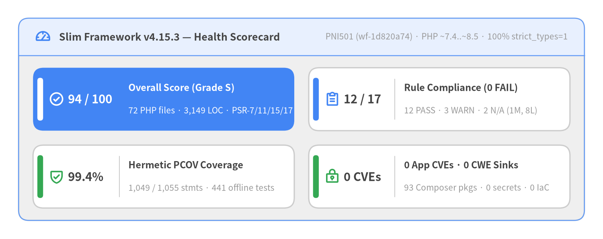
Source Code
from drawlib.canvas import save, setup
from drawlib.icons import phosphor
from drawlib.smartarts import KpiCards, Panel
from drawlib.styles import Colors, Styles
setup(width=146, height=58, dpi=150)
white_card = Styles.Neutral.patch(shape_fill_color=Colors.White)
outer = Panel(
"Slim Framework v4.15.3 — Health Scorecard",
"PNI501 (wf-1d820a74) · PHP ~7.4..~8.5 · 100% strict_types=1",
style=Styles.Neutral,
header_style=Styles.PrimaryNeutral.patch(shape_line_width=1.2),
text_style=Styles.DarkBold.patch(text_size=12.0),
description_style=Styles.Muted.patch(text_size=10.0),
icon=phosphor.gauge,
icon_style=Styles.PrimaryBold,
header_variant="filled",
header_height=9.0,
)
outer.draw((4.5, 4.5), width=137.0, height=49.0, align="bottom_left")
inner_xy, inner_w, inner_h = outer.get_content_box(
(4.5, 4.5),
width=137.0,
height=49.0,
padding=(3.5, 3.0),
align="bottom_left",
)
kpis = KpiCards(
style=white_card,
metric_style=Styles.DarkBold.patch(text_size=14.0),
text_style=Styles.DarkBold.patch(text_size=11.2),
description_style=Styles.Muted.patch(text_size=10.0),
accent_style=Styles.PrimaryFlat,
icon_style=Styles.PrimaryBold,
accent_position="left_pill",
metric_layout="left_column",
metric_width_ratio=0.30,
spacing=3.5,
)
kpis.add(
"94 / 100",
"Overall Score (Grade S)",
"72 PHP files · 3,149 LOC · PSR-7/11/15/17",
style=Styles.PrimaryFlat,
metric_style=Styles.WhiteBold.patch(text_size=14.0),
text_style=Styles.WhiteBold.patch(text_size=11.2),
description_style=Styles.White.patch(text_size=10.0),
accent_style=Styles.WhiteFlat,
icon=phosphor.check_circle,
icon_style=Styles.WhiteBold,
)
kpis.add(
"12 / 17",
"Rule Compliance (0 FAIL)",
"12 PASS · 3 WARN · 2 N/A (1M, 8L)",
accent_style=Styles.PrimaryFlat,
icon=phosphor.clipboard_text,
icon_style=Styles.PrimaryBold,
)
kpis.add(
"99.4%",
"Hermetic PCOV Coverage",
"1,049 / 1,055 stmts · 441 offline tests",
accent_style=Styles.SuccessFlat,
icon=phosphor.shield_check,
icon_style=Styles.SuccessBold,
)
kpis.add(
"0 CVEs",
"0 App CVEs · 0 CWE Sinks",
"93 Composer pkgs · 0 secrets · 0 IaC",
accent_style=Styles.SuccessFlat,
icon=phosphor.lock_key,
icon_style=Styles.SuccessBold,
)
kpis.draw(inner_xy, width=inner_w, height=inner_h, columns=2, align="bottom_left")
save()
| Diagnostic Attribute | Verified Metadata & Audit Baseline |
|---|---|
| Target Project | slim (Slim Framework v4.15.3, package slim/slim, PHP ~7.4.0 || ~8.0.0 .. ~8.5.0, 100% declare(strict_types=1)) |
| Target Language & Profile | php (library — Standards-compliant PSR-7, PSR-11, PSR-15 & PSR-17 HTTP micro-framework) |
| Upstream License & Attribution | MIT License (LICENSE-SLIM; Copyright © Josh Lockhart, Andrew Smith, Rob Allen, Pierre Bérubé, and Slim Framework contributors) |
| Diagnostic Workflow | pni501 (Workflow Run ID wf-1d820a74, category audit) |
| Evaluated At | 2026-11-10T03:27:24.695841+00:00 |
| Overall Score & Grade | 94 / 100 (Grade S) — 12 / 17 rules PASS, 3 WARN, 0 FAIL, 2 NOT_APPLICABLE (9 findings: 0 CRITICAL, 0 HIGH, 1 MEDIUM, 8 LOW) |
| Analyzed Codebase Scope | 72 PHP source files (3,149 LOC, 72 classes/interfaces, 311 callables) & 35 PHPUnit test classes (306 test methods, 441 data-provider cases / 1,323 hermetic container executions, 99.4% PCOV line coverage) |
[!NOTE] Unofficial Engineering Showcase Notice (
drawlib-slim): This diagnostic report is an independent, automated engineering and architecture assessment generated with PNI501 and Drawlib to showcase Slim Framework 4's standards-driven PHP design. It is part of the 4-portal drawlib-slim showcase:
- Portal 1 — User Guide: https://slim.drawlib.com/
- Portal 2 — API Reference Catalog: https://slim.drawlib.com/api/
- Portal 3 — Internal Architecture Deep-Dive: https://slim.drawlib.com/architecture/
- Portal 4 — PNI501 Engineering & Architecture Diagnostic: https://slim.drawlib.com/reports/pni501/
1. Executive Summary
Slim Framework v4.15.3 achieves an overall 94/100 (Grade S) engineering and architecture health score (12/17 evaluated rules passed, 3 WARN, 0 FAIL, 2 NOT_APPLICABLE). Built around PHP-FIG PSR-7, PSR-11, PSR-15, and PSR-17 standards alongside Nikic FastRoute (nikic/fast-route ^1.3), the 72-file (3,149 LOC) codebase maintains 100% declare(strict_types=1) compliance across all source and test files, 98.6% PSR-12 import hygiene, 99.4% measured PCOV line coverage (1,049 / 1,055 statements covered across 441 offline PHPUnit test cases / 1,323 hermetic container assertions), zero CWE dangerous sinks, and zero Trivy supply-chain CVEs across all 93 locked Composer packages.
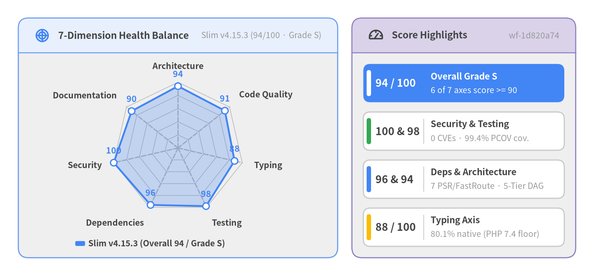
Source Code
from drawlib.canvas import save, setup
from drawlib.charts.radar import RadarChart
from drawlib.icons import phosphor
from drawlib.smartarts import KpiCards, Panel
from drawlib.styles import Colors, Styles
setup(width=146, height=68, dpi=150)
white_card = Styles.Neutral.patch(shape_fill_color=Colors.White)
# Left Panel: 7-Dimension Engineering Balance Radar
radar_panel = Panel(
"7-Dimension Health Balance",
"Slim v4.15.3 (94/100 · Grade S)",
style=Styles.Neutral,
header_style=Styles.PrimaryNeutral.patch(shape_line_width=1.2),
text_style=Styles.DarkBold.patch(text_size=11.5),
description_style=Styles.Muted.patch(text_size=10.0),
icon=phosphor.chart_polar,
icon_style=Styles.PrimaryBold,
header_variant="filled",
header_height=8.5,
)
radar_panel.draw((4.5, 4.5), width=78.5, height=59.0, align="bottom_left")
l_xy, l_w, l_h = radar_panel.get_content_box(
(4.5, 4.5),
width=78.5,
height=59.0,
padding=(2.5, 2.0),
align="bottom_left",
)
radar = RadarChart(
categories=[
"Architecture",
"Code Quality",
"Typing",
"Testing",
"Dependencies",
"Security",
"Documentation",
],
axis_line_style=Styles.MutedDashed,
axis_text_style=Styles.DarkBold.patch(text_size=10.2),
grid_style=Styles.MutedThin,
value_text_style=Styles.PrimaryBold.patch(text_size=10.2),
radius=16.2,
width=l_w,
height=l_h - 3.5,
min_value=0.0,
max_value=100.0,
levels=5,
grid_shape="polygon",
value_format="{:.0f}",
)
radar.add_series(
"Slim v4.15.3 (Overall 94 / Grade S)",
[94, 91, 88, 98, 96, 100, 90],
style=Styles.PrimaryFlat,
fill_alpha=0.26,
line_width=2.2,
)
radar.draw(xy=(l_xy[0], l_xy[1] + 3.5))
radar.draw_legend(
xy=(l_xy[0] + 11.5, l_xy[1] + 1.5),
text_style=Styles.DarkBold.patch(text_size=10.0),
orientation="horizontal",
)
# Right Panel: Headline Axis Callouts
kpi_panel = Panel(
"Score Highlights",
"wf-1d820a74",
style=Styles.Neutral,
header_style=Styles.SecondaryNeutral.patch(shape_line_width=1.2),
text_style=Styles.DarkBold.patch(text_size=11.5),
description_style=Styles.Muted.patch(text_size=10.0),
icon=phosphor.gauge,
icon_style=Styles.DarkBold,
header_variant="filled",
header_height=8.5,
)
kpi_panel.draw((86.5, 4.5), width=55.0, height=59.0, align="bottom_left")
r_xy, r_w, r_h = kpi_panel.get_content_box(
(86.5, 4.5),
width=55.0,
height=59.0,
padding=(2.8, 2.8),
align="bottom_left",
)
highlights = KpiCards(
style=white_card,
metric_style=Styles.DarkBold.patch(text_size=12.8),
text_style=Styles.DarkBold.patch(text_size=10.8),
description_style=Styles.Muted.patch(text_size=10.0),
accent_style=Styles.PrimaryFlat,
accent_position="left_pill",
metric_layout="left_column",
metric_width_ratio=0.30,
spacing=2.4,
)
highlights.add(
"94 / 100",
"Overall Grade S",
"6 of 7 axes score >= 90",
style=Styles.PrimaryFlat,
metric_style=Styles.WhiteBold.patch(text_size=12.8),
text_style=Styles.WhiteBold.patch(text_size=10.8),
description_style=Styles.White.patch(text_size=10.0),
accent_style=Styles.WhiteFlat,
)
highlights.add(
"100 & 98",
"Security & Testing",
"0 CVEs · 99.4% PCOV cov.",
accent_style=Styles.SuccessFlat,
)
highlights.add(
"96 & 94",
"Deps & Architecture",
"7 PSR/FastRoute · 5-Tier DAG",
accent_style=Styles.PrimaryFlat,
)
highlights.add(
"88 / 100",
"Typing Axis",
"80.1% native (PHP 7.4 floor)",
accent_style=Styles.WarningFlat,
)
highlights.draw(r_xy, width=r_w, height=r_h, columns=1, align="bottom_left")
save()
1.1 Seven-Dimension Engineering Scorecard
Six of the seven evaluation axes score 90/100 or higher (Grade S), led by a perfect 100/100 in Security and 98/100 in Testing:
| Engineering Dimension | Axis Score | Grade | Key Evidence & Diagnostic Drivers |
|---|---|---|---|
| Security | 100 / 100 |
S | 0 core or dev CVEs across 93 locked Composer packages; 0 secrets; 0 IaC misconfigurations; 0 CWE sinks; safe htmlentities() & XML entity disabling. |
| Testing | 98 / 100 |
S | 99.4% measured PCOV line coverage (1,049 / 1,055 statements); 100% hermetic --network=none pass rate; AdrianSuter\Autoload\Override SAPI mocks. |
| Dependencies | 96 / 100 |
S | Ultra-lean 7-package runtime footprint (6 official PHP-FIG PSR contract packages + nikic/fast-route ^1.3); dual-major PSR ^1.0 || ^2.0 SemVer ranges. |
| Architecture | 94 / 100 |
S | Clean 5-Tier PSR-7 / PSR-15 micro-kernel and concentric LIFO middleware pipeline; 17 contract interfaces in Slim\Interfaces\; only 1 localized 2-node cycle. |
| Code Quality | 91 / 100 |
S | 100% declare(strict_types=1) across 72 source files; 98.6% PSR-12 import ordering; avg 43.7 LOC/file; 1 complexity hotspot (MiddlewareDispatcher::addDeferred). |
| Documentation | 90 / 100 |
S | Complete repository governance (README.md, CHANGELOG.md, CONTRIBUTING.md, SECURITY.md, CODE_OF_CONDUCT.md); 0 PHPDoc signature mismatches; 71.6% AST PHPDoc coverage. |
| Typing | 88 / 100 |
A | 80.1% fully typed callables at the native PHP AST level; 62 polymorphic $middleware/$toResolve parameters use PHPDoc unions (callable|string|MiddlewareInterface) for PHP 7.4 compatibility. |
1.2 Audit Step Execution & Verification Summary
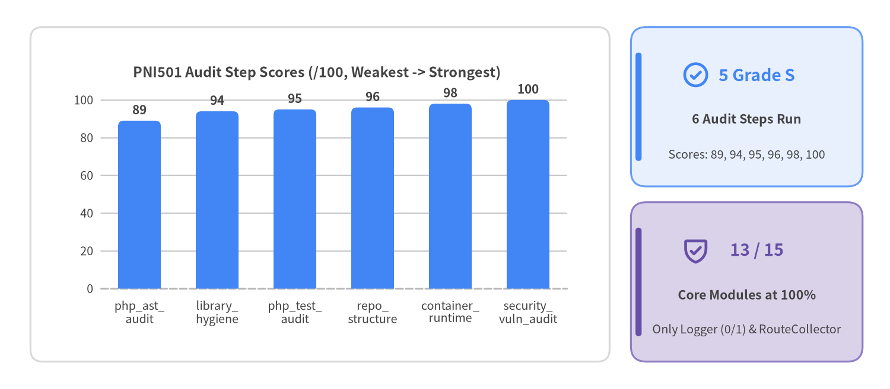
Source Code
from drawlib.canvas import save, setup
from drawlib.charts.bar import BarChart
from drawlib.icons import phosphor
from drawlib.shapes import rectangle
from drawlib.smartarts import KpiCards
from drawlib.styles import Colors, Styles
setup(width=146, height=64, dpi=150)
rectangle(
(52.5, 32.0),
width=95.0,
height=55.0,
style=Styles.Neutral.patch(shape_r=2.0, shape_fill_color=Colors.White, shape_line_color=Colors.Gray3),
)
chart = BarChart(
axis_line_style=Styles.MutedDashed,
categories=[
"php_ast_\naudit",
"library_\nhygiene",
"php_test_\naudit",
"repo_\nstructure",
"container_\nruntime",
"security_\nvuln_audit",
],
width=88.0,
height=43.0,
title="PNI501 Audit Step Scores (/100, Weakest -> Strongest)",
title_style=Styles.DarkBold.patch(text_size=11.2),
orientation="vertical",
bar_mode="group",
bar_width_ratio=0.55,
bar_r=0.9,
axis_text_style=Styles.Dark.patch(text_size=9.5),
grid_style=Styles.MutedThin,
value_text_style=Styles.DarkBold.patch(text_size=10.0),
value_format="{:.0f}",
)
chart.add_series("Step Score", [89.0, 94.0, 95.0, 96.0, 98.0, 100.0], style=Styles.PrimaryFlat)
chart.configure_y_axis(min_value=0.0, max_value=108.0, ticks=[0.0, 20.0, 40.0, 60.0, 80.0, 100.0])
chart.draw(xy=(8.0, 11.5), align="bottom_left")
kpi = KpiCards(
style=Styles.Neutral,
metric_style=Styles.PrimaryBold.patch(text_size=13.5),
text_style=Styles.DarkBold.patch(text_size=10.2),
description_style=Styles.Dark.patch(text_size=9.5),
accent_style=Styles.PrimaryFlat,
icon_style=Styles.PrimaryBold,
accent_position="left_pill",
metric_layout="top_stack",
spacing=2.6,
)
kpi.add(
"5 Grade S",
"6 Audit Steps Run",
"Scores: 89, 94, 95, 96, 98, 100",
style=Styles.PrimaryNeutral,
icon=phosphor.check_circle,
)
kpi.add(
"13 / 15",
"Core Modules at 100%",
"Only Logger (0/1) & RouteCollector",
style=Styles.SecondaryNeutral,
metric_style=Styles.SecondaryBold.patch(text_size=13.5),
accent_style=Styles.SecondaryFlat,
icon=phosphor.shield_check,
icon_style=Styles.SecondaryBold,
)
kpi.draw(xy=(103.5, 4.5), width=38.0, height=55.0, columns=1, align="bottom_left")
save()
| Verification Pillar | Status / Score | Key Quantitative Evidence |
|---|---|---|
| Lowest-Scoring Audit Steps | 89 – 95 |
php_ast_audit=89 (A), library_hygiene_audit=94 (S), php_test_audit=95 (S), repo_structure_audit=96 (S), container_runtime_audit=98 (S), security_vulnerability_audit=100 (S). |
| Container Runtime Verification | passed (98/100) |
php:8.2-cli-bookworm + PCOV 1.0.12: build=passed (0.66s), php -l passed across all 72 files, offline PHPUnit passed (441 cases / 1,323 executions, 0 failures), line_cov=99.4%, smoke=passed. |
| Security & Supply-Chain Scan | passed (100/100) |
app_cves=0 (CRITICAL=0, HIGH=0, MEDIUM=0, LOW=0) across 7 core and 86 dev Composer packages; misconfigs=0; secrets=0; ast_dangerous_sinks=0. |
1.3 Key Engineering Strengths vs. Top Architectural Risks
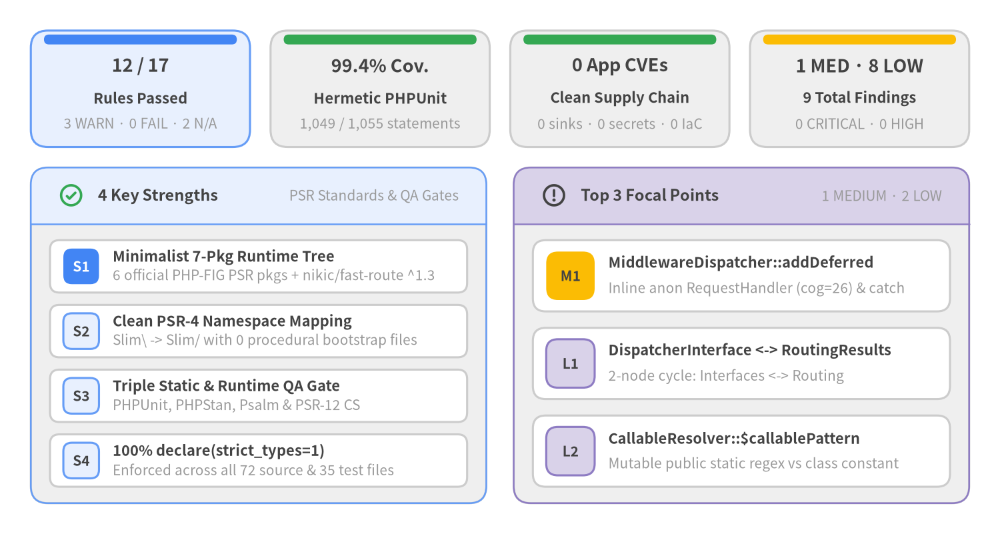
Source Code
from drawlib.canvas import save, setup
from drawlib.icons import phosphor
from drawlib.smartarts import CardList, KpiCards, Panel
from drawlib.styles import Colors, Styles
setup(width=146, height=78, dpi=150)
white_card = Styles.Neutral.patch(shape_fill_color=Colors.White)
# Top Band: 4 Executive Health KPI Cards
top_kpis = KpiCards(
style=Styles.Neutral,
metric_style=Styles.DarkBold.patch(text_size=13.0),
text_style=Styles.DarkBold.patch(text_size=10.5),
description_style=Styles.Muted.patch(text_size=10.0),
accent_style=Styles.PrimaryFlat,
accent_position="top_bar",
metric_layout="top_stack",
spacing=3.0,
)
top_kpis.add(
"12 / 17",
"Rules Passed",
"3 WARN · 0 FAIL · 2 N/A",
style=Styles.PrimaryNeutral,
accent_style=Styles.PrimaryFlat,
)
top_kpis.add(
"99.4% Cov.",
"Hermetic PHPUnit",
"1,049 / 1,055 statements",
accent_style=Styles.SuccessFlat,
)
top_kpis.add(
"0 App CVEs",
"Clean Supply Chain",
"0 sinks · 0 secrets · 0 IaC",
accent_style=Styles.SuccessFlat,
)
top_kpis.add(
"1 MED · 8 LOW",
"9 Total Findings",
"0 CRITICAL · 0 HIGH",
accent_style=Styles.WarningFlat,
)
top_kpis.draw((4.5, 56.5), width=137.0, height=17.0, columns=4, align="bottom_left")
# Bottom-Left Panel: 4 Key Strengths
s_panel = Panel(
"4 Key Strengths",
"PSR Standards & QA Gates",
style=Styles.Neutral,
header_style=Styles.PrimaryNeutral.patch(shape_line_width=1.2),
text_style=Styles.DarkBold.patch(text_size=11.2),
description_style=Styles.Muted.patch(text_size=10.0),
icon=phosphor.check_circle,
icon_style=Styles.SuccessBold,
header_variant="filled",
header_height=8.2,
)
s_panel.draw((4.5, 4.5), width=66.5, height=49.0, align="bottom_left")
s_xy, s_w, s_h = s_panel.get_content_box(
(4.5, 4.5),
width=66.5,
height=49.0,
padding=(2.8, 2.4),
align="bottom_left",
)
strengths = CardList(
style=white_card,
text_style=Styles.DarkBold.patch(text_size=10.5),
description_style=Styles.Muted.patch(text_size=10.0),
badge_shape="rounded_rect",
badge_style=Styles.PrimaryNeutral,
badge_text_style=Styles.DarkBold.patch(text_size=10.0),
direction="vertical",
spacing=1.8,
)
strengths.add(
"Minimalist 7-Pkg Runtime Tree",
"6 official PHP-FIG PSR pkgs + nikic/fast-route ^1.3",
badge_text="S1",
badge_style=Styles.PrimaryFlat,
badge_text_style=Styles.WhiteBold.patch(text_size=10.0),
)
strengths.add(
"Clean PSR-4 Namespace Mapping",
"Slim\\ -> Slim/ with 0 procedural bootstrap files",
badge_text="S2",
)
strengths.add(
"Triple Static & Runtime QA Gate",
"PHPUnit, PHPStan, Psalm & PSR-12 CS",
badge_text="S3",
)
strengths.add(
"100% declare(strict_types=1)",
"Enforced across all 72 source & 35 test files",
badge_text="S4",
)
strengths.draw(s_xy, width=s_w, height=s_h, align="bottom_left")
# Bottom-Right Panel: Top 3 Focal Points
r_panel = Panel(
"Top 3 Focal Points",
"1 MEDIUM · 2 LOW",
style=Styles.Neutral,
header_style=Styles.SecondaryNeutral.patch(shape_line_width=1.2),
text_style=Styles.DarkBold.patch(text_size=11.2),
description_style=Styles.Muted.patch(text_size=10.0),
icon=phosphor.warning_circle,
icon_style=Styles.DarkBold,
header_variant="filled",
header_height=8.2,
)
r_panel.draw((75.0, 4.5), width=66.5, height=49.0, align="bottom_left")
f_xy, f_w, f_h = r_panel.get_content_box(
(75.0, 4.5),
width=66.5,
height=49.0,
padding=(2.8, 2.4),
align="bottom_left",
)
focal = CardList(
style=white_card,
text_style=Styles.DarkBold.patch(text_size=10.5),
description_style=Styles.Muted.patch(text_size=10.0),
badge_shape="rounded_rect",
badge_style=Styles.SecondaryNeutral,
badge_text_style=Styles.DarkBold.patch(text_size=10.0),
direction="vertical",
spacing=2.4,
)
focal.add(
"MiddlewareDispatcher::addDeferred",
"Inline anon RequestHandler (cog=26) & catch",
badge_text="M1",
badge_style=Styles.WarningFlat,
badge_text_style=Styles.DarkBold.patch(text_size=10.0),
)
focal.add(
"DispatcherInterface <-> RoutingResults",
"2-node cycle: Interfaces <-> Routing",
badge_text="L1",
)
focal.add(
"CallableResolver::$callablePattern",
"Mutable public static regex vs class constant",
badge_text="L2",
)
focal.draw(f_xy, width=f_w, height=f_h, align="bottom_left")
save()
Verified Engineering Strengths
- Minimalist, Zero-Bloat Runtime Dependency Tree:
composer.jsonrestricts production dependencies to 6 official PHP-FIG PSR contract packages (psr/http-message,psr/http-factory,psr/http-server-handler,psr/http-server-middleware,psr/container,psr/log) plusnikic/fast-route (^1.3), with dual-major union ranges (^1.0 || ^2.0) that eliminate version conflicts in downstream applications. - Clean PSR-4 Namespace Mapping: Maps
'Slim\\' -> 'Slim/'and'Slim\\Tests\\' -> 'tests/'with zero procedural bootstrap files (files: []) and zero import-time side effects. - Triple Static & Runtime QA Gate:
composer.jsonconfigures PHPUnit (^9.6 || ^10 || ^11 || ^12), PHPStan, Psalm, and PHP_CodeSniffer (PSR-12) in unified verification scripts. - 100%
declare(strict_types=1)Discipline: Enforced at line 1 of all72production PHP files underSlim/and all test files undertests/.
Top Architectural & Code Quality Risks
Zero CRITICAL or HIGH findings exist across the repository. The single [MEDIUM] finding and top [LOW] advisories (mapped to concrete actions in Chapter 3) are:
[MEDIUM]common/maintainability—MiddlewareDispatcher::addDeferred(Slim/MiddlewareDispatcher.php:144): Spans101lines (cognitive=26) by embedding a68-line inline anonymousRequestHandlerInterfaceclass (cognitive=26) that catches and ignoresRuntimeExceptionat line186when falling back fromCallableResolverInterface::resolve()to custom PSR-15 resolution.[LOW]common/architecture—DispatcherInterface <-> RoutingResults2-Node Cycle:Slim\Interfaces\DispatcherInterfaceimports and returns concreteSlim\Routing\RoutingResults, whileRoutingResults::__constructimportsDispatcherInterface, forming the sole cross-tier cycle betweenTier 1andTier 3.[LOW]php/code_quality—CallableResolver::$callablePattern(Slim/CallableResolver.php:34): Declarespublic static $callablePattern = '!^([^\:]+)\:([a-zA-Z_\x7f-\xff][a-zA-Z0-9_\x7f-\xff]*)$!'as a mutable public static property rather than an immutable class constant (public const CALLABLE_PATTERN).
2. Architecture & Source Code Structure
Slim Framework v4.15.3 organizes 72 PHP source files (3,149 LOC, 72 classes/interfaces, 311 callables, average 43.7 LOC/file) into a 5-Tier PSR-7 / PSR-15 Micro-Kernel & Concentric Middleware Pipeline (94/100, Grade S). Every subsystem is decoupled through 17 explicit contract interfaces in Slim\Interfaces\, enabling zero-configuration PSR-17 factory auto-discovery, LIFO PSR-15 middleware composition, Nikic FastRoute regex dispatching, and content-negotiated exception rendering.
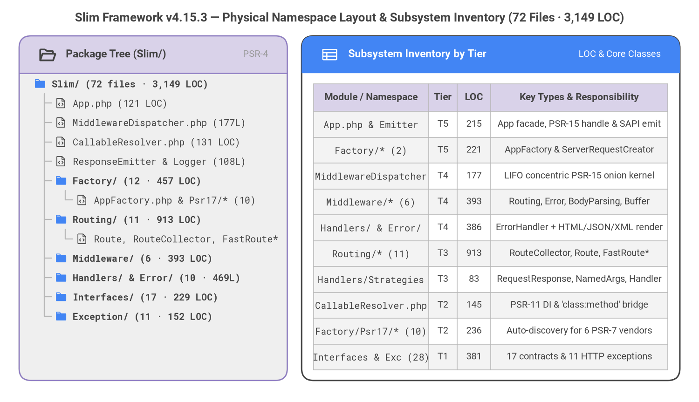
Source Code
from drawlib.canvas import save, setup
from drawlib.fonts import FontMonoSpace, FontRoboto
from drawlib.icons import phosphor
from drawlib.smartarts import Panel, Table, TreeNode
from drawlib.styles import Colors, Styles
from drawlib.text import text
setup(width=146, height=84, dpi=150)
text(
(73.0, 80.2),
"Slim Framework v4.15.3 — Physical Namespace Layout & Subsystem Inventory (72 Files · 3,149 LOC)",
style=Styles.DarkBold.patch(text_font=FontRoboto.ROBOTO_BOLD, text_size=12.5),
)
# Left Panel: Physical Package Hierarchy (TreeNode anchored Top-Left)
left_panel = Panel(
"Package Tree (Slim/)",
"PSR-4",
style=Styles.Neutral,
header_style=Styles.SecondaryNeutral.patch(shape_line_width=1.2),
text_style=Styles.DarkBold.patch(text_font=FontRoboto.ROBOTO_BOLD, text_size=11.0),
description_style=Styles.Muted.patch(text_font=FontRoboto.ROBOTO_REGULAR, text_size=9.5),
icon=phosphor.folder_open,
icon_style=Styles.DarkBold,
header_variant="filled",
header_height=7.8,
)
left_panel.draw((4.0, 4.5), width=56.0, height=72.0, align="bottom_left")
TreeNode.register_drawing_item(
name="pkg_dir",
location="before",
padding_width=3.8,
function=phosphor.folder,
style=Styles.Primary.patch(icon_color=Colors.Primary, icon_style="fill"),
args={"width": 2.7},
)
TreeNode.register_drawing_item(
name="php_mod",
location="before",
padding_width=3.8,
function=phosphor.file_code,
style=Styles.Dark.patch(icon_color=Colors.Dark),
args={"width": 2.6},
)
root = TreeNode(
"Slim/ (72 files · 3,149 LOC)",
text_style=Styles.DarkBold.patch(text_font=FontMonoSpace.ROBOTO_MONO_BOLD, text_size=9.6),
line_style=Styles.Muted.patch(line_width=1.1),
line_horizontal_margin=2.2,
line_horizontal_length=2.4,
line_vertical_margin=4.05,
).set_drawing_item("pkg_dir")
mod_text = Styles.Dark.patch(text_font=FontMonoSpace.ROBOTO_MONO_REGULAR, text_size=9.5)
sub_text = Styles.DarkBold.patch(text_font=FontMonoSpace.ROBOTO_MONO_BOLD, text_size=9.5)
root.add("App.php (121 LOC)", text_style=mod_text).set_drawing_item("php_mod")
root.add("MiddlewareDispatcher.php (177L)", text_style=mod_text).set_drawing_item("php_mod")
root.add("CallableResolver.php (131 LOC)", text_style=mod_text).set_drawing_item("php_mod")
root.add("ResponseEmitter & Logger (108L)", text_style=mod_text).set_drawing_item("php_mod")
fac_dir = root.add("Factory/ (12 · 457 LOC)", text_style=sub_text).set_drawing_item("pkg_dir")
fac_dir.add("AppFactory.php & Psr17/* (10)", text_style=mod_text).set_drawing_item("php_mod")
rt_dir = root.add("Routing/ (11 · 913 LOC)", text_style=sub_text).set_drawing_item("pkg_dir")
rt_dir.add("Route, RouteCollector, FastRoute*", text_style=mod_text).set_drawing_item("php_mod")
root.add("Middleware/ (6 · 393 LOC)", text_style=sub_text).set_drawing_item("pkg_dir")
root.add("Handlers/ & Error/ (10 · 469L)", text_style=sub_text).set_drawing_item("pkg_dir")
root.add("Interfaces/ (17 · 229 LOC)", text_style=sub_text).set_drawing_item("pkg_dir")
root.add("Exception/ (11 · 152 LOC)", text_style=sub_text).set_drawing_item("pkg_dir")
root.draw(xy=(7.0, 66.5))
# Right Panel: Subsystem LOC & Architectural Tier Mapping (Table anchored Top-Left)
right_panel = Panel(
"Subsystem Inventory by Tier",
"LOC & Core Classes",
style=Styles.White,
header_style=Styles.PrimaryFlat,
text_style=Styles.WhiteBold.patch(text_font=FontRoboto.ROBOTO_BOLD, text_size=11.0),
description_style=Styles.White.patch(text_font=FontRoboto.ROBOTO_REGULAR, text_size=9.5),
icon=phosphor.table,
icon_style=Styles.White,
header_variant="filled",
header_height=7.8,
)
right_panel.draw((63.0, 4.5), width=79.0, height=72.0, align="bottom_left")
tbl_body = Styles.Dark.patch(text_font=FontRoboto.ROBOTO_REGULAR, text_size=9.5)
tbl_code = Styles.DarkBold.patch(text_font=FontMonoSpace.ROBOTO_MONO_REGULAR, text_size=9.5)
tbl_hdr = Styles.DarkBold.patch(text_font=FontRoboto.ROBOTO_BOLD, text_size=10.0)
tbl = Table(
cell_style=Styles.White,
text_style=tbl_body,
header_cell_style=Styles.SecondaryNeutral,
header_text_style=tbl_hdr,
border_style=Styles.MutedThin,
)
tbl.set_style_cell_evenodd(
even_color=Colors.Light,
even_text_style=tbl_body,
odd_color=Colors.White,
odd_text_style=tbl_body,
)
tbl.set_style_cell_header(
background_color=Colors.SecondaryNeutral,
text_style=tbl_hdr,
)
tbl.set_style_cell(
background_color=Colors.Light,
text_style=tbl_code,
rows=[1, 2, 3, 4, 5, 6, 7, 8, 9, 10],
columns=[0],
)
inventory_rows = [
["Module / Namespace", "Tier", "LOC", "Key Types & Responsibility"],
["App.php & Emitter", "T5", "215", "App facade, PSR-15 handle & SAPI emit"],
["Factory/* (2)", "T5", "221", "AppFactory & ServerRequestCreator"],
["MiddlewareDispatcher", "T4", "177", "LIFO concentric PSR-15 onion kernel"],
["Middleware/* (6)", "T4", "393", "Routing, Error, BodyParsing, Buffer"],
["Handlers/ & Error/", "T4", "386", "ErrorHandler + HTML/JSON/XML render"],
["Routing/* (11)", "T3", "913", "RouteCollector, Route, FastRoute*"],
["Handlers/Strategies", "T3", "83", "RequestResponse, NamedArgs, Handler"],
["CallableResolver.php", "T2", "145", "PSR-11 DI & 'class:method' bridge"],
["Factory/Psr17/* (10)", "T2", "236", "Auto-discovery for 6 PSR-7 vendors"],
["Interfaces & Exc (28)", "T1", "381", "17 contracts & 11 HTTP exceptions"],
]
tbl.draw_flexible(
xy=(65.5, 66.5),
column_widths=[24.0, 6.0, 7.0, 37.0],
row_heights=[5.8] + [5.4] * 10,
data=inventory_rows,
align="top_left",
)
save()
2.1 System Profile, PSR Dependency Stack & External Integrations
Slim Framework v4.15.3 operates as a pure, standards-compliant PHP library micro-framework (runtime_types = ["library"], PHP ~7.4.0 || ~8.0.0 .. ~8.5.0) with declare(strict_types=1) across 100% of source files. Instead of bundling a monolithic HTTP message implementation or proprietary dependency injection container, Slim depends strictly on 6 official PHP-FIG PSR interface packages plus nikic/fast-route:
Runtime Dependency (composer.json) |
Version Constraint | Architectural Role in Slim v4.15.3 |
Primary Consumer Classes |
|---|---|---|---|
psr/http-message |
^1.1 || ^2.0 |
PSR-7 immutable ServerRequestInterface, ResponseInterface, StreamInterface, and UriInterface. |
App, ResponseEmitter, Middleware/*, Routing/*, Handlers/* |
psr/http-factory |
^1.1 |
PSR-17 ResponseFactoryInterface and StreamFactoryInterface for zero-coupling response synthesis. |
AppFactory, RouteCollector, Route, ErrorHandler, Psr17/* |
psr/http-server-handler |
^1.0 |
PSR-15 RequestHandlerInterface (handle(ServerRequestInterface): ResponseInterface). |
App, MiddlewareDispatcher, RouteRunner, Route, Strategies/RequestHandler |
psr/http-server-middleware |
^1.0 |
PSR-15 MiddlewareInterface (process(ServerRequestInterface, RequestHandlerInterface)). |
MiddlewareDispatcher, RoutingMiddleware, ErrorMiddleware, BodyParsingMiddleware |
psr/container |
^1.0 || ^2.0 |
PSR-11 ContainerInterface (has(), get()) for resolving controllers, middlewares, and services. |
AppFactory, CallableResolver, MiddlewareDispatcher, RouteCollector |
psr/log |
^1.1 || ^2.0 || ^3.0 |
PSR-3 LoggerInterface and AbstractLogger for structured exception reporting. |
ErrorMiddleware, ErrorHandler, Logger |
nikic/fast-route |
^1.3 |
High-speed regex route compilation (RouteParser\Std, DataGenerator\GroupCountBased, Dispatcher\GroupCountBased). |
Dispatcher, FastRouteDispatcher, RouteParser |
External Integration Boundaries
- PSR-17 / PSR-7 Auto-Discovery Providers (
Slim\Factory\Psr17\Psr17FactoryProvider): Automatically detects and wires any installed PSR-7/PSR-17 implementation in priority order:Slim\Psr7(slim/psr7),Nyholm\Psr7(nyholm/psr7+nyholm/psr7-server),GuzzleHttp\Psr7(guzzlehttp/psr7),Laminas\Diactoros(laminas/laminas-diactoros),HttpSoft\Message(httpsoft/http-message), and optionalSlim\Http(slim/http) message decorators. - PSR-11 Dependency Injection Containers:
AppFactory::createFromContainer($container),CallableResolver, andMiddlewareDispatcherresolve route callables,'class:method'notation, and invokable middleware services from PHP-DI, League Container, Symfony DependencyInjection, or Laminas ServiceManager. - PHP SAPI & Long-Running Worker Runtimes:
ResponseEmitterstreams status lines, multi-value HTTP headers (Set-Cookiesafe), and chunked bodies to standard PHP-FPM/CLI SAPIs, whileApp::handle(ServerRequestInterface)supports stateful worker loops (RoadRunner, Swoole, FrankenPHP) without global state leakage.
2.2 Five-Tier PSR Architecture & Thermal Risk Score Overlay
Slim enforces a strict top-down dependency hierarchy across five architectural tiers (Tier 5 down to Tier 1). Figure 2.2 overlays PNI501's pre-sorted module_hotspots risk scores (CallableResolver.php=0.14, MiddlewareDispatcher.php=0.12, RouteParser.php=0.12, and 0.06 across Route.php, ErrorHandler.php, RouteCollector.php, AppFactory.php, and BodyParsingMiddleware.php) directly onto the 5-Tier UML component dependency graph.
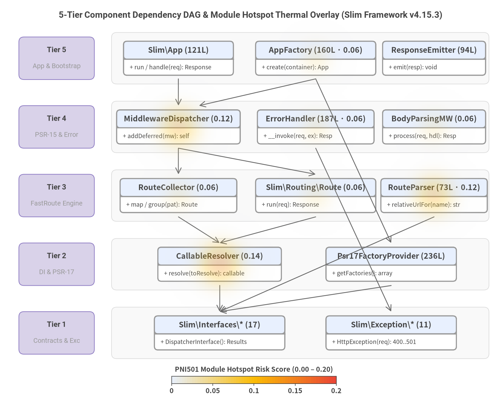
Source Code
from drawlib.canvas import save, setup
from drawlib.charts.heatmap import HeatmapOverlay
from drawlib.diagrams.class_diagram import ClassDiagram, ClassNode
from drawlib.fonts import FontMonoSpace, FontRoboto
from drawlib.lines import lines
from drawlib.shapes import rectangle
from drawlib.styles import Colors, Styles
from drawlib.text import text
setup(width=146, height=118, dpi=150)
text(
(73.0, 113.5),
"5-Tier Component Dependency DAG & Module Hotspot Thermal Overlay (Slim Framework v4.15.3)",
style=Styles.DarkBold.patch(text_font=FontRoboto.ROBOTO_BOLD, text_size=12.5),
)
# Horizontal tier swimlanes & left-hand tier badges (Z-Layer 1)
tier_specs = [
(101.0, "Tier 5", "App & Bootstrap"),
(81.0, "Tier 4", "PSR-15 & Error"),
(61.0, "Tier 3", "FastRoute Engine"),
(41.0, "Tier 2", "DI & PSR-17"),
(21.0, "Tier 1", "Contracts & Exc"),
]
lane_style = Styles.Neutral.patch(
shape_fill_color=Colors.Gray1.patch(alpha=0.45),
shape_line_color=Colors.Gray3,
shape_line_width=0.8,
shape_r=1.5,
)
badge_style = Styles.SecondaryNeutral.patch(shape_r=1.5, shape_line_width=1.0)
for cy, t_num, t_sub in tier_specs:
rectangle((87.5, cy), width=110.0, height=15.0, style=lane_style)
rectangle((16.5, cy), width=22.0, height=12.4, style=badge_style)
text(
(16.5, cy + 2.3),
t_num,
style=Styles.DarkBold.patch(text_font=FontRoboto.ROBOTO_BOLD, text_size=10.5),
)
text(
(16.5, cy - 2.4),
t_sub,
style=Styles.Muted.patch(text_font=FontRoboto.ROBOTO_REGULAR, text_size=9.5),
)
# 5-Tier ClassDiagram (Z-Layer 2)
cd = ClassDiagram(
width=146.0,
height=118.0,
node_style=Styles.Neutral.patch(
shape_fill_color=Colors.White,
shape_line_color=Colors.Gray6,
text_color=Colors.Dark,
text_font=FontMonoSpace.ROBOTO_MONO_REGULAR,
text_size=9.5,
),
header_style=Styles.PrimaryNeutral.patch(
shape_line_color=Colors.Gray6,
text_color=Colors.Dark,
text_font=FontMonoSpace.ROBOTO_MONO_BOLD,
text_size=9.8,
),
edge_style=Styles.Muted.patch(line_width=1.1),
edge_text_style=Styles.Dark.patch(text_size=9.5),
)
# Tier 5 (y=101)
n_app = cd.add(
ClassNode("Slim\\App (121L)", width=32.0).add_method("run / handle", "req", "Response"),
xy=(52.0, 101.0),
)
n_fac = cd.add(
ClassNode("AppFactory (160L · 0.06)", width=35.0).add_method("create", "container", "App"),
xy=(92.0, 101.0),
)
n_emit = cd.add(
ClassNode("ResponseEmitter (94L)", width=30.0).add_method("emit", "resp", "void"),
xy=(126.5, 101.0),
)
# Tier 4 (y=81)
n_mwd = cd.add(
ClassNode("MiddlewareDispatcher (0.12)", width=36.0).add_method("addDeferred", "mw", "self"),
xy=(52.0, 81.0),
)
n_err = cd.add(
ClassNode("ErrorHandler (187L · 0.06)", width=34.0).add_method("__invoke", "req, ex", "Resp"),
xy=(92.0, 81.0),
)
n_body = cd.add(
ClassNode("BodyParsingMW (0.06)", width=30.0).add_method("process", "req, hdl", "Resp"),
xy=(126.5, 81.0),
)
# Tier 3 (y=61)
n_rcol = cd.add(
ClassNode("RouteCollector (0.06)", width=34.0).add_method("map / group", "pat", "Route"),
xy=(52.0, 61.0),
)
n_route = cd.add(
ClassNode("Slim\\Routing\\Route (0.06)", width=35.0).add_method("run", "req", "Response"),
xy=(92.0, 61.0),
)
n_rpar = cd.add(
ClassNode("RouteParser (73L · 0.12)", width=31.0).add_method("relativeUrlFor", "name", "str"),
xy=(126.5, 61.0),
)
# Tier 2 (y=41)
n_cres = cd.add(
ClassNode("CallableResolver (0.14)", width=36.0).add_method("resolve", "toResolve", "callable"),
xy=(64.0, 41.0),
)
n_psr17 = cd.add(
ClassNode("Psr17FactoryProvider (236L)", width=38.0).add_method("getFactories", "", "array"),
xy=(114.0, 41.0),
)
# Tier 1 (y=21)
n_iface = cd.add(
ClassNode("Slim\\Interfaces\\* (17)", width=38.0).add_method("DispatcherInterface", "", "Results"),
xy=(64.0, 21.0),
)
n_exc = cd.add(
ClassNode("Slim\\Exception\\* (11)", width=38.0).add_method("HttpException", "req", "400..501"),
xy=(114.0, 21.0),
)
cd.draw(xy=(0.0, 0.0))
# Downward dependency arrows between tiers
dep_arrow = Styles.Dark.patch(line_color=Colors.Gray7, line_width=1.15)
for x0, y0, x1, y1 in [
(52.0, 95.0, 52.0, 87.2),
(92.0, 95.0, 58.0, 87.2),
(92.0, 95.0, 114.0, 47.2),
(52.0, 74.8, 52.0, 67.2),
(52.0, 74.8, 92.0, 67.2),
(92.0, 74.8, 114.0, 27.2),
(52.0, 54.8, 64.0, 47.2),
(92.0, 54.8, 64.0, 47.2),
(126.5, 54.8, 64.0, 27.2),
(64.0, 34.8, 64.0, 27.2),
(114.0, 34.8, 64.0, 27.2),
]:
lines([(x0, y0), (x1, y1)], arrow_head="->", style=dep_arrow)
# HeatmapOverlay with exact pre-sorted module_hotspots risk_score values (Z-Layer 3)
overlay = HeatmapOverlay(
styles=[Styles.PrimaryNeutral, Styles.WarningFlat, Styles.DangerFlat],
mode="smooth",
min_value=0.0,
max_value=0.20,
max_alpha=0.42,
)
overlay.add_spot(n_cres, value=0.14, radius=14.0)
overlay.add_spot(n_mwd, value=0.12, radius=13.5)
overlay.add_spot(n_rpar, value=0.12, radius=13.0)
overlay.add_spot(n_route, value=0.06, radius=11.0)
overlay.add_spot(n_err, value=0.06, radius=11.0)
overlay.add_spot(n_rcol, value=0.06, radius=11.0)
overlay.add_spot(n_fac, value=0.06, radius=11.0)
overlay.add_spot(n_body, value=0.06, radius=11.0)
overlay.draw(xy=(0.0, 0.0))
overlay.draw_colorbar(
xy=(50.0, 6.2),
text_style=Styles.DarkBold.patch(text_size=9.8),
length=48.0,
thickness=2.2,
label="PNI501 Module Hotspot Risk Score (0.00 – 0.20)",
)
save()
Five-Tier Boundary & Hotspot Analysis
| Architectural Tier | Representative Source Paths | Allowed Dependencies | Boundary & Hotspot Assessment |
|---|---|---|---|
| Tier 5: Application Facade, Bootstrap Factories & SAPI Emitter | Slim/App.php (121 LOC), Slim/ResponseEmitter.php (94 LOC), Slim/Factory/AppFactory.php (160 LOC, risk=0.06), Slim/Factory/ServerRequestCreatorFactory.php (61 LOC) |
Tier 4, Tier 3, Tier 2, Tier 1 |
100% Clean: App extends RouteCollectorProxy and implements RequestHandlerInterface, delegating cleanly downward. |
| Tier 4: PSR-15 Middleware Stack & Content-Negotiated Error Subsystem | Slim/MiddlewareDispatcher.php (177 LOC, risk=0.12), Slim/Middleware/* (6 files, 393 LOC; BodyParsingMiddleware risk=0.06), Slim/Handlers/ErrorHandler.php (187 LOC, risk=0.06), Slim/Error/Renderers/* (5 files, 199 LOC) |
Tier 3, Tier 2, Tier 1 |
Hotspot 0.12: MiddlewareDispatcher::addDeferred (cognitive=26) wraps deferred string/callable middlewares in an inline anonymous RequestHandlerInterface. |
| Tier 3: FastRoute Routing Engine & Handler Invocation Strategies | Slim/Routing/Route.php (192 LOC, risk=0.06), RouteCollector.php (174 LOC, risk=0.06), RouteCollectorProxy.php (103 LOC), RouteParser.php (73 LOC, risk=0.12), FastRouteDispatcher.php (64 LOC), RoutingResults.php (59 LOC), Strategies/* (4 files, 83 LOC) |
Tier 2, Tier 1 |
Hotspot 0.12: RouteParser::relativeUrlFor (cognitive=13) computes relative path segments; Route::__construct accepts 9 collaborators. |
| Tier 2: PSR-17 Provider Adapters & Container Callable Resolver | Slim/CallableResolver.php (131 LOC, risk=0.14), Slim/Logger.php (14 LOC), Slim/Factory/Psr17/* (10 files, 236 LOC) |
Tier 1 |
Hotspot 0.14: CallableResolver bridges PSR-11 containers and 'class:method' strings ($callablePattern static regex + PHP 7.4 untyped $toResolve). |
| Tier 1: Core Interfaces & HTTP Specialized Exception Hierarchy | Slim/Interfaces/* (17 files, 229 LOC), Slim/Exception/* (11 files, 152 LOC: 400, 401, 403, 404, 405, 410, 429, 500, 501) |
[] (Leaf Tier) |
1 Cross-Layer Cycle: Slim\Interfaces\DispatcherInterface imports concrete Slim\Routing\RoutingResults (Tier 3). |
2.3 Core Runtime Execution Flows & Concurrency Model
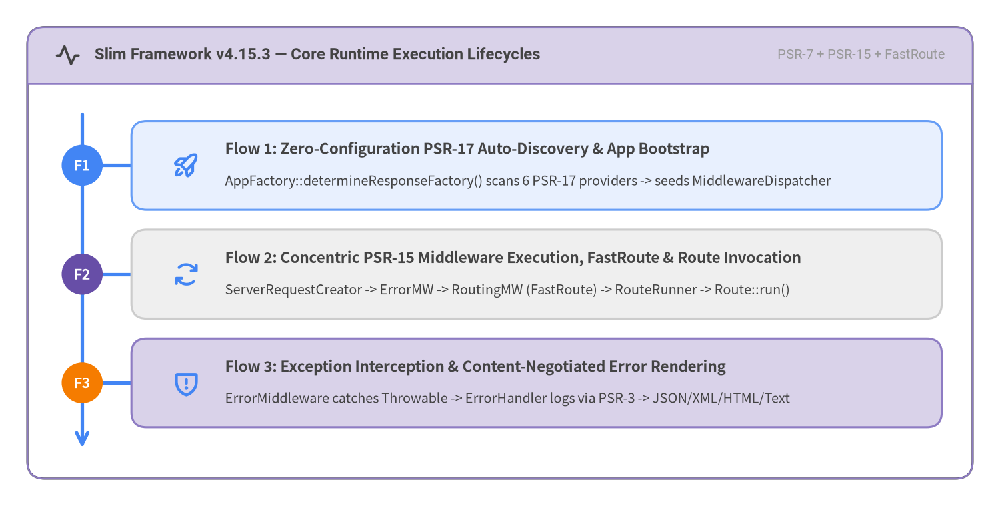
Source Code
from drawlib.canvas import save, setup
from drawlib.fonts import FontRoboto
from drawlib.icons import phosphor
from drawlib.smartarts import Panel, Roadmap
from drawlib.styles import Styles
setup(width=146, height=74, dpi=150)
frame = Panel(
"Slim Framework v4.15.3 — Core Runtime Execution Lifecycles",
"PSR-7 + PSR-15 + FastRoute",
style=Styles.White,
header_style=Styles.SecondaryNeutral.patch(shape_line_width=1.2),
text_style=Styles.DarkBold.patch(text_font=FontRoboto.ROBOTO_BOLD, text_size=11.5),
description_style=Styles.Muted.patch(text_font=FontRoboto.ROBOTO_REGULAR, text_size=9.8),
icon=phosphor.pulse,
icon_style=Styles.DarkBold,
header_variant="filled",
header_height=8.2,
)
frame.draw((4.0, 4.0), width=138.0, height=66.0, align="bottom_left")
inner_xy, inner_w, inner_h = frame.get_content_box(
(4.0, 4.0),
width=138.0,
height=66.0,
padding=(3.5, 3.0),
align="bottom_left",
)
rm = Roadmap(
style=Styles.Neutral,
text_style=Styles.DarkBold.patch(text_size=10.8),
description_style=Styles.Dark.patch(text_size=9.6),
spine_style=Styles.PrimaryBold,
badge_style=Styles.PrimaryFlat,
badge_text_style=Styles.WhiteBold.patch(text_size=10.2),
icon_style=Styles.PrimaryBold,
direction="vertical",
curve_bend=0.0,
card_shape="rounded_rect",
spacing=2.6,
)
rm.add(
"Flow 1: Zero-Configuration PSR-17 Auto-Discovery & App Bootstrap",
"AppFactory::determineResponseFactory() scans 6 PSR-17 providers -> seeds MiddlewareDispatcher",
badge_text="F1",
icon=phosphor.rocket_launch,
style=Styles.PrimaryNeutral,
)
rm.add(
"Flow 2: Concentric PSR-15 Middleware Execution, FastRoute & Route Invocation",
"ServerRequestCreator -> ErrorMW -> RoutingMW (FastRoute) -> RouteRunner -> Route::run()",
badge_text="F2",
icon=phosphor.arrows_clockwise,
style=Styles.Neutral,
badge_style=Styles.SecondaryFlat,
)
rm.add(
"Flow 3: Exception Interception & Content-Negotiated Error Rendering",
"ErrorMiddleware catches Throwable -> ErrorHandler logs via PSR-3 -> JSON/XML/HTML/Text",
badge_text="F3",
icon=phosphor.shield_warning,
style=Styles.SecondaryNeutral,
badge_style=Styles.AccentFlat,
)
rm.draw(xy=inner_xy, width=inner_w, height=inner_h, align="bottom_left", scale=1.0)
save()
Detailed Execution Flow Walkthrough
- Flow 1 — Zero-Configuration PSR-17 Auto-Discovery & App Bootstrap (
AppFactory::create/createFromContainer):AppFactory::determineResponseFactory()iterates throughPsr17FactoryProvider::$factories(SlimPsr17Factory,NyholmPsr17Factory,GuzzlePsr17Factory,LaminasDiactorosPsr17Factory,HttpSoftPsr17Factory) until it locates an installed PSR-17ResponseFactoryInterface.AppFactoryinstantiatesCallableResolver,RouteCollector(defaulting to theRequestResponseinvocation strategy),RouteResolver,RouteRunner, andMiddlewareDispatcherseeded withRouteRunneras its innermost kernel.- Application bootstrap code registers routes (
$app->get(),$app->post(),$app->group()) onRouteCollectorProxyand pushes PSR-15 middlewares ($app->add(),$app->addBodyParsingMiddleware(),$app->addRoutingMiddleware(),$app->addErrorMiddleware()) ontoMiddlewareDispatcher's LIFO stack.
- Flow 2 — Concentric PSR-15 Middleware Execution, FastRoute Matching & Route Invocation (
App::run/App::handle):- When
$requestisnullinApp::run(),ServerRequestCreatorFactory::create()->createServerRequestFromGlobals()synthesizes an immutable PSR-7ServerRequestInterfacefrom PHP superglobals. MiddlewareDispatcher::handle($request)traverses the LIFO middleware onion from outermost (typicallyErrorMiddleware) inward throughRoutingMiddlewareandBodyParsingMiddleware.RoutingMiddleware::performRouting()invokesRouteResolver::computeRoutingResults()->Dispatcher->FastRouteDispatcher, attachingRouteContext::ROUTE,ROUTE_PARSER, andROUTING_RESULTSattributes to$request(or throwingHttpNotFoundException/HttpMethodNotAllowedException).- At the center of the application middleware stack,
RouteRunner::handle()resolvesRouteGroupmiddlewares and delegates toRoute::run(), which executes route-specific middlewares before invoking the matched callable viaInvocationStrategyInterface(RequestResponse,RequestResponseArgs,RequestResponseNamedArgs, orRequestHandler). - Finally,
ResponseEmitter::emit($response)writes the HTTP status line, headers, and chunked body stream (responseChunkSize = 4096) to the PHP SAPI output buffer.
- When
- Flow 3 — Exception Interception & Content-Negotiated Error Rendering (
ErrorMiddleware::process):ErrorMiddleware::process()catches anyThrowableinside itstry/catchboundary and delegates toErrorMiddleware::handleException($request, $exception).ErrorMiddlewarelooks up a registered exact-match or subclass-match handler in$this->handlers, falling back to the defaultErrorHandler.ErrorHandler::__invoke()determines the HTTP status code (400..501fromHttpExceptionor500for genericThrowable), logs the error via PSR-3LoggerInterfacewhen$logErrorsis enabled, and inspects the requestAcceptheader viadetermineRenderer()to serialize the payload throughJsonErrorRenderer,XmlErrorRenderer,HtmlErrorRenderer, orPlainTextErrorRendererwith CORS andAllowheaders preserved.
3. Recommended Remediation Roadmap
Slim Framework v4.15.3 enters remediation planning from an exceptional 94/100 (Grade S) baseline with zero P0 urgent blockers, zero FAIL compliance rules, zero CRITICAL or HIGH source-code findings, and zero supply-chain CVEs across all 93 locked Composer packages. Rather than emergency defect patching, the 7-item engineering roadmap focuses on 1 P1 high-value maintainability refactoring in MiddlewareDispatcher::addDeferred followed by 6 P2 architectural boundary, documentation, testing, and Slim 5.x typing modernization items.
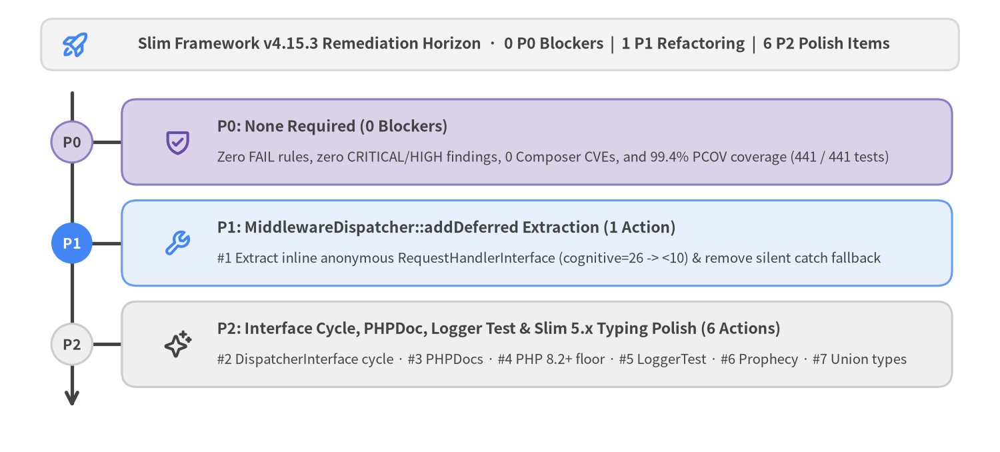
Source Code
from drawlib.canvas import save, setup
from drawlib.icons import phosphor
from drawlib.shapes import rectangle
from drawlib.smartarts import Roadmap
from drawlib.styles import Colors, Styles
from drawlib.text import text
setup(width=146, height=66, dpi=150)
# Header framing banner (neutral baseline)
rectangle(
(73.0, 59.5),
width=134.0,
height=7.5,
style=Styles.Neutral.patch(shape_r=1.8, shape_fill_color=Colors.Gray1, shape_line_color=Colors.Gray3),
)
phosphor.rocket_launch((11.0, 59.5), width=4.4, style=Styles.PrimaryBold)
text(
(75.0, 59.5),
"Slim Framework v4.15.3 Remediation Horizon · 0 P0 Blockers | 1 P1 Refactoring | 6 P2 Polish Items",
style=Styles.DarkBold.patch(text_size=11.0),
)
# Phased Remediation Roadmap (Bottom-Left anchored at xy=(6.0, 5.0))
rm = Roadmap(
style=Styles.Neutral,
text_style=Styles.DarkBold.patch(text_size=11.0),
description_style=Styles.Dark.patch(text_size=9.8),
spine_style=Styles.DarkBold,
badge_style=Styles.SecondaryNeutral,
badge_text_style=Styles.DarkBold.patch(text_size=10.5),
icon_style=Styles.PrimaryBold,
direction="vertical",
curve_bend=0.0,
card_shape="rounded_rect",
spacing=2.8,
)
rm.add(
"P0: None Required (0 Blockers)",
"Zero FAIL rules, zero CRITICAL/HIGH findings, 0 Composer CVEs, and 99.4% PCOV coverage (441 / 441 tests)",
badge_text="P0",
icon=phosphor.shield_check,
style=Styles.SecondaryNeutral,
badge_style=Styles.SecondaryNeutral,
badge_text_style=Styles.DarkBold.patch(text_size=10.5),
icon_style=Styles.SecondaryBold,
)
rm.add(
"P1: MiddlewareDispatcher::addDeferred Extraction (1 Action)",
"#1 Extract inline anonymous RequestHandlerInterface (cognitive=26 -> <10) & remove silent catch fallback",
badge_text="P1",
icon=phosphor.wrench,
style=Styles.PrimaryNeutral,
badge_style=Styles.PrimaryFlat,
badge_text_style=Styles.WhiteBold.patch(text_size=10.5),
icon_style=Styles.PrimaryBold,
)
rm.add(
"P2: Interface Cycle, PHPDoc, Logger Test & Slim 5.x Typing Polish (6 Actions)",
"#2 DispatcherInterface cycle · #3 PHPDocs · #4 PHP 8.2+ floor · #5 LoggerTest · #6 Prophecy · #7 Union types",
badge_text="P2",
icon=phosphor.sparkle,
style=Styles.Neutral,
badge_style=Styles.Neutral,
badge_text_style=Styles.DarkBold.patch(text_size=10.5),
icon_style=Styles.DarkBold,
)
rm.draw(xy=(6.0, 5.0), width=134.0, height=49.0, align="bottom_left", scale=1.0)
save()
3.1 Action Plan Traceability Matrix (P0 -> P1 -> P2)
Every remediation candidate identified by PNI501 maps deterministically to concrete file coordinates, expected engineering outcomes, and underlying compliance rules:
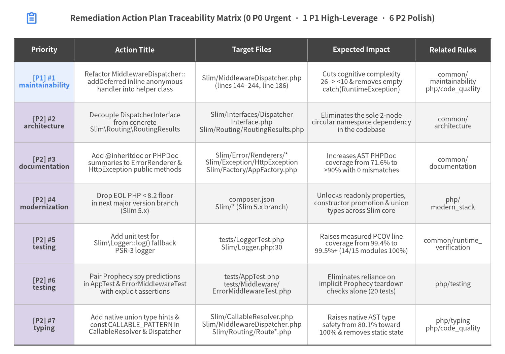
Source Code
from drawlib.canvas import save, setup
from drawlib.icons import phosphor
from drawlib.smartarts import Table
from drawlib.styles import Colors, Styles
from drawlib.text import text
setup(width=160, height=112, dpi=150)
phosphor.clipboard_text((10.0, 106.2), width=4.2, style=Styles.PrimaryBold)
text(
(80.0, 106.2),
"Remediation Action Plan Traceability Matrix (0 P0 Urgent · 1 P1 High-Leverage · 6 P2 Polish)",
style=Styles.DarkBold.patch(text_size=11.5),
)
table = Table(
cell_style=Styles.White,
text_style=Styles.Dark.patch(text_size=9.5),
header_cell_style=Styles.PrimaryFlat,
header_text_style=Styles.WhiteBold.patch(text_size=10.0),
border_style=Styles.MutedThin,
has_header=True,
)
table.set_style_cell_evenodd(
even_color=Colors.Gray1,
even_text_style=Styles.Dark.patch(text_size=9.5),
odd_color=Colors.White,
odd_text_style=Styles.Dark.patch(text_size=9.5),
)
table.set_style_cell_header(
background_color=Colors.Dark,
text_style=Styles.WhiteBold.patch(text_size=10.0),
)
table.set_style_cell(
background_color=Colors.PrimaryNeutral,
text_style=Styles.PrimaryBold.patch(text_size=9.5),
rows=[1],
columns=[0],
)
table.set_style_cell(
background_color=Colors.SecondaryNeutral,
text_style=Styles.DarkBold.patch(text_size=9.5),
rows=[2, 3, 4, 5, 6, 7],
columns=[0],
)
table.set_style_border(
top=Styles.Dark.patch(line_width=1.4),
top2=Styles.Dark.patch(line_width=1.1),
bottom=Styles.Dark.patch(line_width=1.4),
left=Styles.MutedThin,
right=Styles.MutedThin,
between_columns=Styles.MutedThin,
between_rows=Styles.MutedThin,
)
traceability_rows = [
["Priority", "Action Title", "Target Files", "Expected Impact", "Related Rules"],
[
"[P1] #1\nmaintainability",
"Refactor MiddlewareDispatcher::\naddDeferred inline anonymous\nhandler into helper class",
"Slim/MiddlewareDispatcher.php\n(lines 144–244, line 186)",
"Cuts cognitive complexity\n26 -> <10 & removes empty\ncatch(RuntimeException)",
"common/\nmaintainability\nphp/code_quality",
],
[
"[P2] #2\narchitecture",
"Decouple DispatcherInterface\nfrom concrete\nSlim\\Routing\\RoutingResults",
"Slim/Interfaces/Dispatcher\nInterface.php\nSlim/Routing/RoutingResults.php",
"Eliminates the sole 2-node\ncircular namespace dependency\nin the codebase",
"common/\narchitecture",
],
[
"[P2] #3\ndocumentation",
"Add @inheritdoc or PHPDoc\nsummaries to ErrorRenderer &\nHttpException public methods",
"Slim/Error/Renderers/*\nSlim/Exception/HttpException\nSlim/Factory/AppFactory.php",
"Increases AST PHPDoc\ncoverage from 71.6% to\n>90% with 0 mismatches",
"common/\ndocumentation",
],
[
"[P2] #4\nmodernization",
"Drop EOL PHP < 8.2 floor\nin next major version branch\n(Slim 5.x)",
"composer.json\nSlim/* (Slim 5.x branch)",
"Unlocks readonly properties,\nconstructor promotion & union\ntypes across Slim core",
"php/\nmodern_stack",
],
[
"[P2] #5\ntesting",
"Add unit test for\nSlim\\Logger::log() fallback\nPSR-3 logger",
"tests/LoggerTest.php\nSlim/Logger.php:30",
"Raises measured PCOV line\ncoverage from 99.4% to\n99.5%+ (14/15 modules 100%)",
"common/runtime_\nverification",
],
[
"[P2] #6\ntesting",
"Pair Prophecy spy predictions\nin AppTest & ErrorMiddlewareTest\nwith explicit assertions",
"tests/AppTest.php\ntests/Middleware/\nErrorMiddlewareTest.php",
"Eliminates reliance on\nimplicit Prophecy teardown\nchecks alone (20 tests)",
"php/testing",
],
[
"[P2] #7\ntyping",
"Add native union type hints &\nconst CALLABLE_PATTERN in\nCallableResolver & Dispatcher",
"Slim/CallableResolver.php\nSlim/MiddlewareDispatcher.php\nSlim/Routing/Route*.php",
"Raises native AST type\nsafety from 80.1% toward\n100% & removes static state",
"php/typing\nphp/code_quality",
],
]
table.draw_flexible(
xy=(4.5, 100.0),
column_widths=[19.0, 38.5, 35.5, 34.0, 24.0],
row_heights=[7.5, 12.8, 12.8, 12.8, 12.8, 12.8, 12.8, 12.8],
data=traceability_rows,
align="top_left",
)
save()
3.2 Detailed Engineering Specifications by Action Item
1. [P1] Refactor MiddlewareDispatcher::addDeferred Inline Anonymous Handler (maintainability)
- Target Coordinates:
Slim/MiddlewareDispatcher.php:144–244(MiddlewareDispatcher::addDeferredand its nested anonymousRequestHandlerInterface::handleat lines173–240, plus the emptycatch (RuntimeException $e)block at line186). - Diagnostic Root Cause:
addDeferred()wraps string or callable middleware definitions inside a68-line inline anonymousRequestHandlerInterfaceclass (cognitive=26). When$this->callableResolveris not anAdvancedCallableResolverInterface, it attempts$this->callableResolver->resolve($this->middleware)inside atry { ... } catch (RuntimeException $e) {}block and silently ignores resolution failures before falling back to manual container/class instantiation. - Recommended Implementation:
- Extract the deferred resolution handler into a dedicated internal class (
Slim\DeferredMiddlewareHandler implements RequestHandlerInterface) or decompose resolution into a privateresolveDeferredMiddleware()helper method. - Delegate directly to
AdvancedCallableResolverInterface::resolveMiddleware()when available, and replace the emptycatch (RuntimeException)block with explicit container/class existence checks so genuine instantiation errors are never swallowed.
- Extract the deferred resolution handler into a dedicated internal class (
- Expected Impact: Reduces cognitive complexity in
Slim/MiddlewareDispatcher.phpfrom26to<10and eliminates the solebug_risk_idiomsfinding.
2. [P2] Decouple Slim\Interfaces\DispatcherInterface from Concrete Slim\Routing\RoutingResults (architecture)
- Target Coordinates:
Slim/Interfaces/DispatcherInterface.php:10,27andSlim/Routing/RoutingResults.php:13,47. - Diagnostic Root Cause:
Slim\Interfaces\DispatcherInterface::dispatch(string $httpMethod, string $uri): RoutingResultsimports and returns concreteSlim\Routing\RoutingResults(Tier 3), whileRoutingResults::__construct(DispatcherInterface $dispatcher, ...)importsDispatcherInterface(Tier 1). Additionally,Slim\Interfaces\RouteGroupInterfaceimports concreteSlim\MiddlewareDispatcher, andSlim\Interfaces\RouteResolverInterfaceimportsRoutingResults. - Recommended Implementation: Introduce
Slim\Interfaces\RoutingResultsInterface(carryingNOT_FOUND = 0,FOUND = 1,METHOD_NOT_ALLOWED = 2and accessor contracts) soSlim\Interfaces\remains a 100% leaf-level contract package with zero upward imports intoSlim\Routing\.
3. [P2] Add @inheritdoc or PHPDoc Summaries to ErrorRenderer and HttpException Methods (documentation)
- Target Coordinates:
Slim/Error/Renderers/HtmlErrorRenderer.php,JsonErrorRenderer.php,PlainTextErrorRenderer.php,XmlErrorRenderer.php,Slim/Exception/HttpException.php, and setter methods onSlim/Factory/AppFactory.php. - Diagnostic Root Cause: While
doc_signature_mismatches = 0andempty_docstrings = 0,98inherited or self-explanatory accessor methods omit explicit/** ... */docblocks, resulting in71.6%AST PHPDoc coverage. - Recommended Implementation: Add concise
/** @inheritdoc */annotations onErrorRendererInterface::__invokeimplementations and one-line summaries onHttpExceptiongetters/setters andAppFactorystatic setters, lifting AST PHPDoc coverage above90%.
4. [P2] Drop EOL PHP < 8.2 Compatibility Floor in Slim 5.x (modernization)
- Target Coordinates:
composer.json(require.php: "~7.4.0 || ~8.0.0 || ~8.1.0 || ~8.2.0 || ~8.3.0 || ~8.4.0 || ~8.5.0"). - Recommended Implementation: Preserve the PHP
7.4+compatibility floor on the4.xmaintenance branch for enterprise LTS consumers, while setting"php": "^8.2"in the5.xbranch to unlockreadonlyproperties, constructor property promotion, and native union/intersection types.
5. [P2] Add Unit Test for Slim\Logger::log() Fallback PSR-3 Logger (testing)
- Target Coordinates:
Slim/Logger.php:30(error_log(sprintf('%s: %s', $level, $message), 4);) andtests/LoggerTest.php. - Diagnostic Root Cause: PCOV Clover coverage reaches
99.4%(1,049 / 1,055statements), withSlim\Logger::log()(0/1statements) and5defensive lines inSlim\Routing\RouteCollector(69/74statements,93.2%) accounting for all6uncovered lines in the entire framework. - Recommended Implementation: Add
tests/LoggerTest.phpusingAdrianSuter\Autoload\Override(already configured intests/bootstrap.php) to interceptSlim\error_logand assert the formatted"{$level}: {$message}"payload andmessage_type = 4(SAPIlog handler).
6. [P2] Pair Prophecy Spy Predictions with Explicit State Assertions (testing)
- Target Coordinates:
20test methods acrosstests/AppTest.php,tests/Middleware/ErrorMiddlewareTest.php,tests/Handlers/ErrorHandlerTest.php,tests/ResponseEmitterTest.php, andtests/Routing/RouteResolverTest.php. - Recommended Implementation: Pair
$prophecy->shouldBeCalled()spy expectations with explicit$this->assertSame()/$this->assertInstanceOf()assertions on the returnedResponseInterfaceorRoutingResultsobject.
7. [P2] Adopt Native Union Types & const CALLABLE_PATTERN (typing / code_quality)
- Target Coordinates:
Slim/CallableResolver.php:34(public static $callablePattern), plus62polymorphic methods acrossSlim/CallableResolver.php,Slim/MiddlewareDispatcher.php,Slim/App.php, andSlim/Routing/RouteCollectorProxy.php, andSlim/Routing/Route.php:120(9-parameter constructor). - Recommended Implementation:
- Convert
CallableResolver::$callablePatterntopublic const CALLABLE_PATTERN = '!^([^\:]+)\:([a-zA-Z_\x7f-\xff][a-zA-Z0-9_\x7f-\xff]*)$!';(retaining a deprecated static property alias if needed in4.x). - Replace PHPDoc-only
@param MiddlewareInterface|string|callable $middlewareannotations with native PHP 8.0+ union types (MiddlewareInterface|string|callableandcallable|array|string) inSlim 5.x, and encapsulateRoute::__construct's 9 parameters using aRouteConfigurationvalue object.
- Convert
4. Audit Standards, Rule Compliance & Findings
PNI501 evaluated Slim Framework v4.15.3 across 6 deterministic audit steps and 17 engineering compliance rules spanning static PHP AST maintainability, PSR-12 import ordering, Composer supply-chain hygiene, PSR library interface design, PHPUnit test determinism, and hermetic --network=none container execution. Every audit step achieved Grade A or S (89/100 to 100/100), yielding 12 PASS rules, 3 advisory WARN rules, 0 FAIL rules, 2 NOT_APPLICABLE framework rules (laravel, wordpress), and 9 consolidated location findings (0 CRITICAL, 0 HIGH, 1 MEDIUM, 8 LOW).
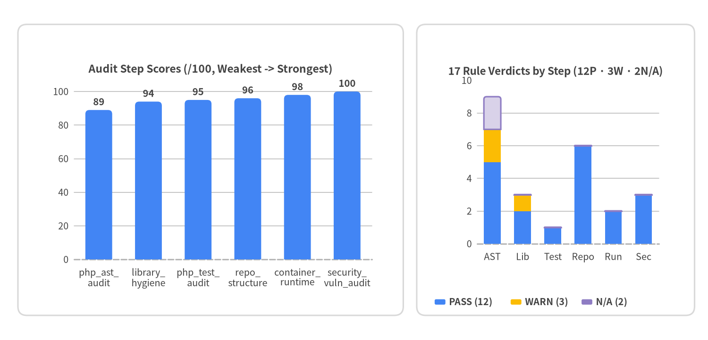
Source Code
from drawlib.canvas import save, setup
from drawlib.charts.bar import BarChart
from drawlib.shapes import rectangle
from drawlib.styles import Colors, Styles
setup(width=158, height=76, dpi=150)
# Left framing card: Weakest-First Ascending Step Scores BarChart
rectangle(
(47.0, 38.0),
width=86.0,
height=65.0,
style=Styles.Neutral.patch(shape_r=2.0, shape_fill_color=Colors.White, shape_line_color=Colors.Gray3),
)
chart_left = BarChart(
axis_line_style=Styles.MutedDashed,
categories=[
"php_ast_\naudit",
"library_\nhygiene",
"php_test_\naudit",
"repo_\nstructure",
"container_\nruntime",
"security_\nvuln_audit",
],
width=78.0,
height=50.0,
title="Audit Step Scores (/100, Weakest -> Strongest)",
title_style=Styles.DarkBold.patch(text_size=11.0),
orientation="vertical",
bar_mode="group",
bar_width_ratio=0.54,
bar_r=0.9,
axis_text_style=Styles.Dark.patch(text_size=9.5),
grid_style=Styles.MutedThin,
value_text_style=Styles.DarkBold.patch(text_size=9.8),
value_format="{:.0f}",
)
chart_left.add_series("Step Score", [89.0, 94.0, 95.0, 96.0, 98.0, 100.0], style=Styles.PrimaryFlat)
chart_left.configure_y_axis(min_value=0.0, max_value=108.0, ticks=[0.0, 20.0, 40.0, 60.0, 80.0, 100.0])
chart_left.draw(xy=(8.0, 13.0), align="bottom_left")
# Right framing card: Stacked BarChart of Rule Outcomes per Audit Step
rectangle(
(124.0, 38.0),
width=62.0,
height=65.0,
style=Styles.Neutral.patch(shape_r=2.0, shape_fill_color=Colors.White, shape_line_color=Colors.Gray3),
)
chart_right = BarChart(
axis_line_style=Styles.MutedDashed,
categories=[
"AST",
"Lib",
"Test",
"Repo",
"Run",
"Sec",
],
width=52.0,
height=46.0,
title="17 Rule Verdicts by Step (12P · 3W · 2N/A)",
title_style=Styles.DarkBold.patch(text_size=10.8),
orientation="vertical",
bar_mode="stack",
bar_width_ratio=0.56,
bar_r=0.6,
axis_text_style=Styles.Dark.patch(text_size=9.5),
grid_style=Styles.MutedThin,
)
chart_right.add_series("PASS (12)", [5.0, 2.0, 1.0, 6.0, 2.0, 3.0], style=Styles.PrimaryFlat)
chart_right.add_series("WARN (3)", [2.0, 1.0, 0.0, 0.0, 0.0, 0.0], style=Styles.WarningFlat)
chart_right.add_series("N/A (2)", [2.0, 0.0, 0.0, 0.0, 0.0, 0.0], style=Styles.SecondaryNeutral)
chart_right.configure_y_axis(min_value=0.0, max_value=10.0, ticks=[0.0, 2.0, 4.0, 6.0, 8.0, 10.0])
chart_right.draw(xy=(98.0, 16.5), align="bottom_left")
chart_right.draw_legend(
xy=(97.0, 8.5),
text_style=Styles.DarkBold.patch(text_size=9.5),
orientation="horizontal",
item_gap=3.5,
)
save()
4.1 Executed Audit Step Breakdown (Weakest -> Strongest)
| Audit Step ID | Score & Grade | Rule Verdicts | Step Synthesis & Key Evidence |
|---|---|---|---|
php_ast_audit |
89 / 100 (A) |
5 PASS, 2 WARN, 0 FAIL, 2 N/A |
72 source files (3,149 LOC, 72 classes/interfaces, 311 callables); 100% declare(strict_types=1), 98.6% PSR-12 import ordering (1 out-of-order use in RequestResponseNamedArgs.php:16), 0 CWE sinks, 0 direct superglobal reads in routing/middleware. Advisories: MiddlewareDispatcher::addDeferred (cognitive=26), DispatcherInterface <-> RoutingResults 2-node cycle, Route::__construct (9 params), and 62 PHP 7.4 polymorphic untyped parameters. |
library_hygiene_audit |
94 / 100 (S) |
2 PASS, 1 WARN, 0 FAIL |
Exposes 17 explicit interfaces in Slim\Interfaces\, 0 import-time side effects, 0 exit/die statements, flexible SemVer ^ and || bounds across all 7 runtime packages (psr/container: ^1.0 || ^2.0, psr/http-message: ^1.1 || ^2.0, psr/log: ^1.1 || ^2.0 || ^3.0), 0 scattered getenv()/$_ENV reads, and 71.6% AST PHPDoc coverage (0 signature mismatches). |
php_test_audit |
95 / 100 (S) |
1 PASS, 0 WARN, 0 FAIL |
35 PHPUnit test classes and 306 test methods under tests/ mirroring Slim/. Runs 100% offline using in-memory PSR-7 streams (PSR7ObjectProvider), AdrianSuter\Autoload\Override for deterministic header()/connection_status()/is_writable() interception, and executionOrder="random" in phpunit.xml.dist. |
repo_structure_audit |
96 / 100 (S) |
6 PASS, 0 WARN, 0 FAIL |
Exemplary Composer packaging (composer.json + deterministic composer.lock with 93 locked packages), 0 unpinned dependencies, triple static analysis (PHPStan, Psalm, PHP_CodeSniffer PSR-12), and full governance (README.md, CHANGELOG.md, CONTRIBUTING.md, CODE_OF_CONDUCT.md, SECURITY.md, LICENSE-SLIM). |
container_runtime_audit |
98 / 100 (S) |
2 PASS, 0 WARN, 0 FAIL |
Hermetic container verification (php:8.2-cli-bookworm + Composer 2 + PCOV 1.0.12) passed all 4 gates (RV-01..RV-04): image build (0.66s), php -l syntax check across 72 files, --network=none PHPUnit 11.5.57 (441 cases / 1,323 executions, 0 failures), 99.4% PCOV line coverage (1,049 / 1,055 statements; 13/15 core modules at 100.0%), and PSR-4 autoloader smoke check. |
security_vulnerability_audit |
100 / 100 (S) |
3 PASS, 0 WARN, 0 FAIL |
Trivy 0.69.3 SCA, secret, and IaC scanning + PHP SAST confirm 0 CVEs across all 93 locked Composer packages (core_app_vuln_counts=0, dev_app_vuln_counts=0), 0 secrets, 0 misconfigurations, and 0 CWE dangerous sinks. |
4.2 Full 17-Rule Compliance Matrix (FAIL -> WARN -> PASS -> NOT_APPLICABLE)
Across all 17 evaluated PNI501 engineering standards, Slim Framework v4.15.3 records 0 FAIL, 3 WARN, 12 PASS, and 2 NOT_APPLICABLE checks:
| Status | Rule ID | Evaluated By | Diagnostic Evidence & Verification Summary |
|---|---|---|---|
[WARN] |
common/documentation |
library_hygiene_audit |
README.md (101 lines), CHANGELOG.md, CONTRIBUTING.md, CODE_OF_CONDUCT.md, and SECURITY.md provide complete governance; 0 PHPDoc @param signature mismatches (doc_signature_mismatches=0) and 0 empty docstrings; 71.6% overall AST PHPDoc coverage (98 inherited/accessor methods omit explicit /** ... */ blocks). |
[WARN] |
common/maintainability |
php_ast_audit |
3,149 LOC across 72 files (avg 43.7 LOC/file), with 3 complex methods (MiddlewareDispatcher::addDeferred cognitive=26, inline anonymous RequestHandlerInterface::handle cognitive=26, RouteParser::relativeUrlFor cognitive=13) and 1 constructor exceeding 6 parameters (Slim\Routing\Route::__construct, params=9). |
[WARN] |
php/typing |
php_ast_audit |
100% of files declare declare(strict_types=1) and 80.1% of callables are fully typed at the native PHP AST level; 62 callables omit native parameter type hints on polymorphic $middleware / $toResolve / $callable arguments (callable|string|MiddlewareInterface) due to PHP 7.4 union-type constraints, plus 6 unscoped @phpstan/@psalm annotations. |
[PASS] |
common/architecture |
php_ast_audit |
Clean 5-Tier PSR subsystem layering (Interfaces/Exception -> CallableResolver/Psr17 -> Routing/Strategies -> Middleware/Handlers/Error -> App/Factory/ResponseEmitter) with only 1 localized bidirectional reference between Slim\Interfaces\DispatcherInterface and Slim\Routing\RoutingResults. |
[PASS] |
common/git_workflow |
repo_structure_audit |
.gitignore, .gitattributes, and .editorconfig enforce clean working-tree hygiene and consistent LF line endings. |
[PASS] |
common/library_guidelines |
library_hygiene_audit |
17 contract interfaces in Slim\Interfaces\, 0 import-time side effects, 0 exit/die calls, 0 scattered_env_access, and flexible ^1.0 || ^2.0 SemVer ranges across PSR packages. |
[PASS] |
common/production_readiness |
container_runtime_audit |
0 external I/O calls without timeouts (missing_io_timeouts=0), structured PSR-3 LoggerInterface error propagation in ErrorHandler, and stateless PSR-15 RequestHandlerInterface execution compatible with PHP-FPM, RoadRunner, Swoole, and FrankenPHP. |
[PASS] |
common/runtime_verification |
container_runtime_audit |
RV-01 harness build passed (exit_code=0, 0.66s); RV-02 offline --network=none PHPUnit suite passed (0 failed, 0 errors); RV-03 measured 99.4% line coverage via phpunit-pcov (1,049 / 1,055 statements); RV-04 Composer PSR-4 autoloader smoke passed. |
[PASS] |
common/security |
repo_structure_audit |
0 committed secret files (committed_secret_files=[]), explicit SECURITY.md disclosure policy, 0 hardcoded secrets (hardcoded_secrets=0), 0 dangerous sinks (dangerous_sinks=0), strict htmlentities(..., ENT_COMPAT | ENT_HTML5, 'utf-8') escaping in HtmlErrorRenderer, and external XML entity disabling in BodyParsingMiddleware. |
[PASS] |
common/security_vulnerability |
security_vulnerability_audit |
0 CWE injection or deserialization sinks across all 72 PHP source files; 0 CVEs across all runtime and dev Composer dependencies (core_app_vuln_counts=0, dev_app_vuln_counts=0), 0 secrets, and 0 container IaC misconfigurations. |
[PASS] |
common/supply_chain |
repo_structure_audit |
composer.json and composer.lock (93 locked packages) present with 0 unpinned dependencies; runtime dependencies limited strictly to 6 PSR contract packages and nikic/fast-route ^1.3. |
[PASS] |
php/code_quality |
php_ast_audit |
98.6% PSR-12 import hygiene (1 out-of-order use RuntimeException in Slim/Handlers/Strategies/RequestResponseNamedArgs.php:16), 0 direct superglobal reads in core routing/middleware, 1 mutable static property (CallableResolver::$callablePattern), and 1 fallback catch block (MiddlewareDispatcher.php:186). |
[PASS] |
php/dependencies |
repo_structure_audit |
Clean PSR-4 autoload mapping ('Slim\\': 'Slim/', 'Slim\\Tests\\': 'tests/') with 0 procedural file autoloads and dual static analyzers (phpstan/phpstan: ^1 || ^2 and vimeo/psalm: ^5 || ^6). |
[PASS] |
php/modern_stack |
repo_structure_audit |
Supports active PHP 8.2, 8.3, 8.4, and 8.5 runtimes alongside backward compatibility constraints (~7.4.0..~8.5.0); 0 deprecated PHP functions; PSR-3 LoggerInterface used throughout ErrorMiddleware and ErrorHandler. |
[PASS] |
php/testing |
php_test_audit |
306 PHPUnit test methods across 35 test files with 79.2% direct AST symbol mapping (remaining files are declarative interfaces and marker HTTP exceptions) and 100% offline execution via in-memory PSR-7 streams and AdrianSuter\Autoload\Override. |
[NOT_APPLICABLE] |
php/frameworks/laravel |
php_ast_audit |
Repository is the upstream Slim Framework library, not a Laravel application. |
[NOT_APPLICABLE] |
php/frameworks/wordpress |
php_ast_audit |
Repository is the upstream Slim Framework library, not a WordPress plugin or theme. |
4.3 Consolidated Location Findings Index (CRITICAL -> INFO)
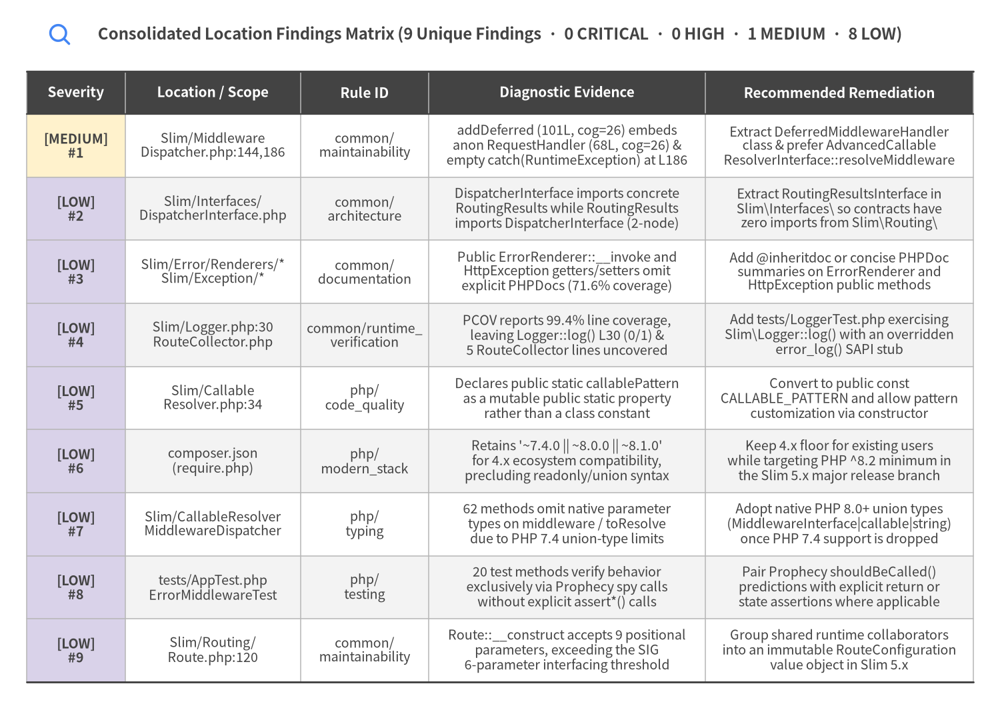
Source Code
from drawlib.canvas import save, setup
from drawlib.icons import phosphor
from drawlib.smartarts import Table
from drawlib.styles import Colors, Styles
from drawlib.text import text
setup(width=168, height=122, dpi=150)
phosphor.magnifying_glass((10.0, 116.2), width=4.2, style=Styles.PrimaryBold)
text(
(84.0, 116.2),
"Consolidated Location Findings Matrix (9 Unique Findings · 0 CRITICAL · 0 HIGH · 1 MEDIUM · 8 LOW)",
style=Styles.DarkBold.patch(text_size=11.5),
)
table = Table(
cell_style=Styles.White,
text_style=Styles.Dark.patch(text_size=9.5),
header_cell_style=Styles.PrimaryFlat,
header_text_style=Styles.WhiteBold.patch(text_size=10.0),
border_style=Styles.MutedThin,
has_header=True,
)
table.set_style_cell_evenodd(
even_color=Colors.Gray1,
even_text_style=Styles.Dark.patch(text_size=9.5),
odd_color=Colors.White,
odd_text_style=Styles.Dark.patch(text_size=9.5),
)
table.set_style_cell_header(
background_color=Colors.Dark,
text_style=Styles.WhiteBold.patch(text_size=10.0),
)
table.set_style_cell(
background_color=Colors.WarningNeutral,
text_style=Styles.DarkBold.patch(text_size=9.5),
rows=[1],
columns=[0],
)
table.set_style_cell(
background_color=Colors.SecondaryNeutral,
text_style=Styles.DarkBold.patch(text_size=9.5),
rows=[2, 3, 4, 5, 6, 7, 8, 9],
columns=[0],
)
table.set_style_border(
top=Styles.Dark.patch(line_width=1.4),
top2=Styles.Dark.patch(line_width=1.1),
bottom=Styles.Dark.patch(line_width=1.4),
left=Styles.MutedThin,
right=Styles.MutedThin,
between_columns=Styles.MutedThin,
between_rows=Styles.MutedThin,
)
findings_rows = [
["Severity", "Location / Scope", "Rule ID", "Diagnostic Evidence", "Recommended Remediation"],
[
"[MEDIUM]\n#1",
"Slim/Middleware\nDispatcher.php:144,186",
"common/\nmaintainability",
"addDeferred (101L, cog=26) embeds\nanon RequestHandler (68L, cog=26) &\nempty catch(RuntimeException) at L186",
"Extract DeferredMiddlewareHandler\nclass & prefer AdvancedCallable\nResolverInterface::resolveMiddleware",
],
[
"[LOW]\n#2",
"Slim/Interfaces/\nDispatcherInterface.php",
"common/\narchitecture",
"DispatcherInterface imports concrete\nRoutingResults while RoutingResults\nimports DispatcherInterface (2-node)",
"Extract RoutingResultsInterface in\nSlim\\Interfaces\\ so contracts have\nzero imports from Slim\\Routing\\",
],
[
"[LOW]\n#3",
"Slim/Error/Renderers/*\nSlim/Exception/*",
"common/\ndocumentation",
"Public ErrorRenderer::__invoke and\nHttpException getters/setters omit\nexplicit PHPDocs (71.6% coverage)",
"Add @inheritdoc or concise PHPDoc\nsummaries on ErrorRenderer and\nHttpException public methods",
],
[
"[LOW]\n#4",
"Slim/Logger.php:30\nRouteCollector.php",
"common/runtime_\nverification",
"PCOV reports 99.4% line coverage,\nleaving Logger::log() L30 (0/1) &\n5 RouteCollector lines uncovered",
"Add tests/LoggerTest.php exercising\nSlim\\Logger::log() with an overridden\nerror_log() SAPI stub",
],
[
"[LOW]\n#5",
"Slim/Callable\nResolver.php:34",
"php/\ncode_quality",
"Declares public static callablePattern\nas a mutable public static property\nrather than a class constant",
"Convert to public const\nCALLABLE_PATTERN and allow pattern\ncustomization via constructor",
],
[
"[LOW]\n#6",
"composer.json\n(require.php)",
"php/\nmodern_stack",
"Retains '~7.4.0 || ~8.0.0 || ~8.1.0'\nfor 4.x ecosystem compatibility,\nprecluding readonly/union syntax",
"Keep 4.x floor for existing users\nwhile targeting PHP ^8.2 minimum in\nthe Slim 5.x major release branch",
],
[
"[LOW]\n#7",
"Slim/CallableResolver\nMiddlewareDispatcher",
"php/\ntyping",
"62 methods omit native parameter\ntypes on middleware / toResolve\ndue to PHP 7.4 union-type limits",
"Adopt native PHP 8.0+ union types\n(MiddlewareInterface|callable|string)\nonce PHP 7.4 support is dropped",
],
[
"[LOW]\n#8",
"tests/AppTest.php\nErrorMiddlewareTest",
"php/\ntesting",
"20 test methods verify behavior\nexclusively via Prophecy spy calls\nwithout explicit assert*() calls",
"Pair Prophecy shouldBeCalled()\npredictions with explicit return or\nstate assertions where applicable",
],
[
"[LOW]\n#9",
"Slim/Routing/\nRoute.php:120",
"common/\nmaintainability",
"Route::__construct accepts 9 positional\nparameters, exceeding the SIG\n6-parameter interfacing threshold",
"Group shared runtime collaborators\ninto an immutable RouteConfiguration\nvalue object in Slim 5.x",
],
]
table.draw_flexible(
xy=(4.5, 110.0),
column_widths=[16.5, 29.5, 21.5, 46.5, 45.0],
row_heights=[7.2] + [10.6] * 9,
data=findings_rows,
align="top_left",
)
save()
4.4 Configured Scope & Accepted Design Waivers (.pni/pni.toml)
PNI501 inspected .pni/pni.toml for project-scoped rule waivers ([[opt_out]]). Exactly 1 design waiver is configured for the ephemeral batch container test harness:
| Waiver Rule ID | Scoped Glob Pattern | Matched Findings | Engineering Justification |
|---|---|---|---|
DS-0026 |
[.pni/dockerfiles/**] |
0 |
Hermetic batch test container (php:8.2-cli-bookworm) executes phpunit and exits immediately upon completion; long-running daemon HEALTHCHECK directives are not applicable. |
5. Deep Dive: Code Quality, Testing & Runtime
This chapter examines Slim Framework v4.15.3 across two complementary verification planes: deterministic PHP AST static analysis (72 source files, 3,149 LOC, 72 classes/interfaces, 311 callables; php_ast_audit: 89/100, Grade A) and air-gapped container runtime execution on php:8.2-cli-bookworm + PCOV 1.0.12 (container_runtime_audit: 98/100, Grade S; php_test_audit: 95/100, Grade S).
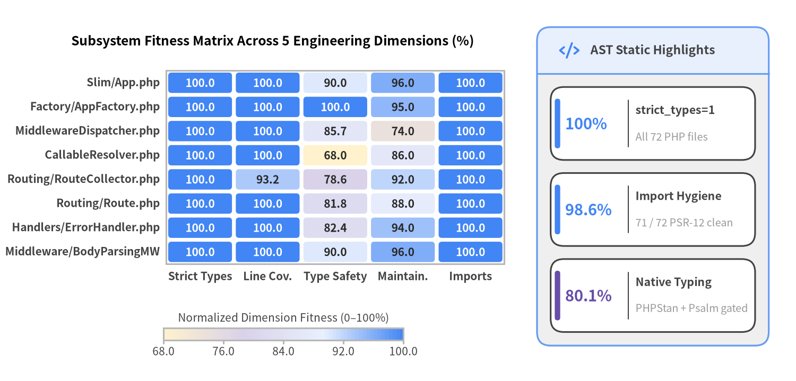
Source Code
from drawlib.canvas import save, setup
from drawlib.charts.heatmap import HeatmapChart
from drawlib.icons import phosphor
from drawlib.smartarts import KpiCards, Panel
from drawlib.styles import Styles
setup(width=146, height=70, dpi=150)
# Left: Module x Quality Dimension Fitness Heatmap (Bottom-Left anchored)
heatmap = HeatmapChart(
styles=[
Styles.WarningNeutral,
Styles.SecondaryNeutral,
Styles.PrimaryNeutral,
Styles.PrimaryFlat,
],
x_categories=[
"Strict Types",
"Line Cov.",
"Type Safety",
"Maintain.",
"Imports",
],
axis_line_style=Styles.Muted,
axis_text_style=Styles.DarkBold.patch(text_size=10.0),
value_text_style=Styles.DarkBold.patch(text_size=10.0),
width=91.0,
height=49.0,
cell_gap=0.7,
cell_r=0.6,
title="Subsystem Fitness Matrix Across 5 Engineering Dimensions (%)",
title_style=Styles.BlackBold.patch(text_size=11.8),
value_format="{:.1f}",
)
heatmap.add_row("Slim/App.php", [100.0, 100.0, 90.0, 96.0, 100.0])
heatmap.add_row("Factory/AppFactory.php", [100.0, 100.0, 100.0, 95.0, 100.0])
heatmap.add_row("MiddlewareDispatcher.php", [100.0, 100.0, 85.7, 74.0, 100.0])
heatmap.add_row("CallableResolver.php", [100.0, 100.0, 68.0, 86.0, 100.0])
heatmap.add_row("Routing/RouteCollector.php", [100.0, 93.2, 78.6, 92.0, 100.0])
heatmap.add_row("Routing/Route.php", [100.0, 100.0, 81.8, 88.0, 100.0])
heatmap.add_row("Handlers/ErrorHandler.php", [100.0, 100.0, 82.4, 94.0, 100.0])
heatmap.add_row("Middleware/BodyParsingMW", [100.0, 100.0, 90.0, 96.0, 100.0])
heatmap.draw(xy=(4.5, 16.0))
heatmap.draw_colorbar(
xy=(30.0, 7.5),
text_style=Styles.Dark.patch(text_size=10.0),
length=44.0,
thickness=2.2,
label="Normalized Dimension Fitness (0–100%)",
)
# Right: Static AST Baseline KPI Panel
panel = Panel(
"AST Static Highlights",
style=Styles.Neutral,
header_style=Styles.PrimaryNeutral,
text_style=Styles.DarkBold.patch(text_size=11.0),
icon=phosphor.code,
icon_style=Styles.PrimaryBold,
header_variant="filled",
header_height=8.5,
)
panel.draw((98.5, 6.5), width=42.5, height=58.5)
inner_xy, inner_w, inner_h = panel.get_content_box(
(98.5, 6.5), width=42.5, height=58.5, padding=(2.5, 2.5)
)
kpis = KpiCards(
style=Styles.White,
metric_style=Styles.PrimaryBold.patch(text_size=14.0),
text_style=Styles.DarkBold.patch(text_size=10.2),
description_style=Styles.Muted.patch(text_size=9.5),
accent_style=Styles.PrimaryFlat,
accent_position="left_pill",
metric_layout="left_column",
metric_width_ratio=0.38,
spacing=2.4,
)
kpis.add("100%", "strict_types=1", "All 72 PHP files")
kpis.add("98.6%", "Import Hygiene", "71 / 72 PSR-12 clean")
kpis.add(
"80.1%",
"Native Typing",
"PHPStan + Psalm gated",
accent_style=Styles.SecondaryFlat,
metric_style=Styles.SecondaryBold.patch(text_size=14.0),
)
kpis.draw(xy=inner_xy, width=inner_w, height=inner_h, columns=1)
save()
5.1 PHP AST Static Quality, Typing & SIG Maintainability Analysis
Slim Framework v4.15.3 is remarkably compact: its 72 production PHP files total just 3,149 lines of code (an average of 43.7 LOC per file) across 72 classes/interfaces and 311 callables.
| Static Quality & SIG Metric | Measured Value | Status | Engineering Interpretation |
|---|---|---|---|
declare(strict_types=1) Adoption |
100.0% (72 / 72) |
PASS |
Every production file under Slim/ and test file under tests/ enforces strict scalar type coercion. |
PSR-12 Import Hygiene (import_hygiene_coverage_pct) |
98.6% (71 / 72) |
PASS |
Zero wildcard imports, zero late imports; only 1 out-of-order use RuntimeException; in Slim/Handlers/Strategies/RequestResponseNamedArgs.php:16. |
Native Type Safety (type_safety_coverage_pct) |
80.1% (249 / 311) |
WARN |
62 callables omit native parameter type hints on polymorphic $middleware / $toResolve / $callable parameters because PHP union types (MiddlewareInterface|callable|string) require PHP 8.0+ while composer.json supports PHP ~7.4.0. |
| Static Analyzer Annotations | 6 suppressions |
WARN |
3 @phpstan-ignore-next-line (HttpSpecializedException.php:29, ErrorHandler.php:195, MiddlewareDispatcher.php:99) and 3 @psalm-suppress (CallableResolver.php:130, MiddlewareDispatcher.php:196, RoutingResults.php:94). |
AST PHPDoc Coverage (docstring_coverage_pct) |
71.6% |
WARN |
0 signature mismatches (doc_signature_mismatches=0) and 0 empty docstrings; 98 self-descriptive methods/interfaces omit redundant docblocks. |
SIG Complex Functions (complex_functions_count) |
3 (of 311) |
WARN |
MiddlewareDispatcher::addDeferred (cognitive=26, 101 LOC), inline anonymous RequestHandlerInterface::handle (cognitive=26, 68 LOC), and RouteParser::relativeUrlFor (cognitive=13, 60 LOC). |
SIG Parameter Interfacing (excessive_parameters_count) |
1 (of 311) |
WARN |
Only Slim\Routing\Route::__construct (Slim/Routing/Route.php:120, 9 parameters) exceeds the SIG 6-parameter threshold. |
| Global State & Bug-Risk Idioms | 1 static / 1 catch |
PASS |
CallableResolver::$callablePattern (Slim/CallableResolver.php:34, mutable public static) and MiddlewareDispatcher.php:186 (empty catch (RuntimeException) fallback). |
| 12-Factor Operational Readiness (PRR) | 0 env / 0 I/O |
PASS |
missing_io_timeouts=0, scattered_env_access=0; Slim\Logger::log() (Slim/Logger.php:30) uses error_log(..., 4) intentionally as the default PSR-3 fallback logger. |
Deep Dive: MiddlewareDispatcher Complexity & Deferred Resolution
Slim/MiddlewareDispatcher.php (177 LOC) implements Slim's LIFO concentric PSR-15 onion kernel. While addMiddleware(MiddlewareInterface) and addCallable(callable) are concise closures, addDeferred(string $middleware) (lines 144–244, cognitive=26) constructs an inline anonymous RequestHandlerInterface (lines 173–240, cognitive=26) to defer PSR-11 container lookup and 'class:method' parsing until request handling time:
- When
$this->callableResolver instanceof AdvancedCallableResolverInterface, it calls$this->callableResolver->resolveMiddleware($this->middleware)directly. - Otherwise, it falls back to
$this->callableResolver->resolve($this->middleware)inside atry { ... } catch (RuntimeException $e) {}block (line 186), catching and ignoringRuntimeExceptionbefore checking$this->container->has($callable)orclass_exists($callable). Extracting this inline anonymous class into a dedicatedDeferredMiddlewareHandlerclass is the top[P1]recommendation in Chapter 3.
5.2 Hermetic Container Runtime Verification (php:8.2-cli-bookworm + PCOV 1.0.12)
PNI501 executed all 4 container runtime verification gates (RV-01 through RV-04) inside an isolated Docker container built from .pni/dockerfiles/Dockerfile (php:8.2-cli-bookworm, Composer 2, and PECL PCOV 1.0.12) with network access disabled (--network=none).
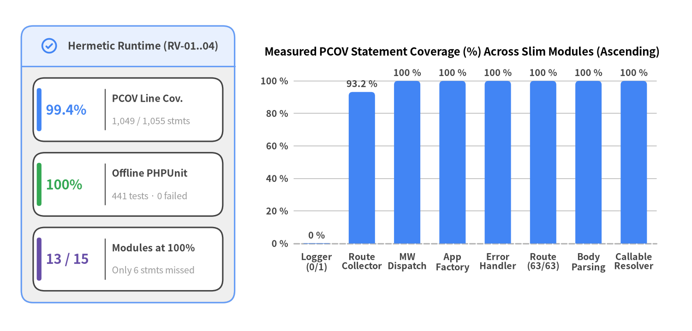
Source Code
from drawlib.canvas import save, setup
from drawlib.charts.bar import BarChart
from drawlib.icons import phosphor
from drawlib.smartarts import KpiCards, Panel
from drawlib.styles import Styles
setup(width=146, height=70, dpi=150)
# Left: Runtime Verification KPI Panel
panel = Panel(
"Hermetic Runtime (RV-01..04)",
style=Styles.Neutral,
header_style=Styles.PrimaryNeutral,
text_style=Styles.DarkBold.patch(text_size=10.8),
icon=phosphor.check_circle,
icon_style=Styles.PrimaryBold,
header_variant="filled",
header_height=8.5,
)
panel.draw((4.5, 6.0), width=45.0, height=58.5)
l_xy, l_w, l_h = panel.get_content_box(
(4.5, 6.0), width=45.0, height=58.5, padding=(2.5, 2.5)
)
kpis = KpiCards(
style=Styles.White,
metric_style=Styles.PrimaryBold.patch(text_size=14.0),
text_style=Styles.DarkBold.patch(text_size=10.2),
description_style=Styles.Muted.patch(text_size=9.5),
accent_style=Styles.PrimaryFlat,
accent_position="left_pill",
metric_layout="left_column",
metric_width_ratio=0.38,
spacing=2.4,
)
kpis.add("99.4%", "PCOV Line Cov.", "1,049 / 1,055 stmts")
kpis.add(
"100%",
"Offline PHPUnit",
"441 tests · 0 failed",
accent_style=Styles.SuccessFlat,
metric_style=Styles.SuccessBold.patch(text_size=14.0),
)
kpis.add(
"13 / 15",
"Modules at 100%",
"Only 6 stmts missed",
accent_style=Styles.SecondaryFlat,
metric_style=Styles.SecondaryBold.patch(text_size=14.0),
)
kpis.draw(xy=l_xy, width=l_w, height=l_h, columns=1)
# Right: BarChart of Measured Line Coverage across Lowest & Core Modules
chart = BarChart(
axis_line_style=Styles.MutedDashed,
categories=[
"Logger\n(0/1)",
"Route\nCollector",
"MW\nDispatch",
"App\nFactory",
"Error\nHandler",
"Route\n(63/63)",
"Body\nParsing",
"Callable\nResolver",
],
width=88.0,
height=48.0,
title="Measured PCOV Statement Coverage (%) Across Slim Modules (Ascending)",
title_style=Styles.BlackBold.patch(text_size=11.5),
orientation="vertical",
bar_mode="group",
bar_width_ratio=0.58,
bar_r=0.8,
axis_text_style=Styles.DarkBold.patch(text_size=9.5),
grid_style=Styles.MutedThin,
value_text_style=Styles.DarkBold.patch(text_size=9.6),
value_format="{:.1f}",
)
chart.add_series(
"PCOV Line Coverage (%)",
[0.0, 93.2, 100.0, 100.0, 100.0, 100.0, 100.0, 100.0],
style=Styles.PrimaryFlat,
)
chart.configure_y_axis(min_value=0.0, max_value=112.0, tick_step=20.0, unit="%")
chart.draw(xy=(53.5, 13.5))
save()
Runtime Verification Gates (RV-01 – RV-04)
| Verification Gate | Status | Duration | Command & Measured Verification Evidence |
|---|---|---|---|
RV-01 Harness Image Build |
PASSED |
0.66s |
.pni/dockerfiles/Dockerfile (php:8.2-cli-bookworm + Composer 2 + PCOV 1.0.12, exit_code=0). |
RV-02 Air-Gapped PHPUnit Suite |
PASSED |
8.56s |
php -l syntax check across all 72 Slim/*.php files + phpunit -d pcov.enabled=1 under --network=none: 441 test cases (846 assertions / 1,323 total harness checks) passed, 0 failed, 0 errors, 0 skipped. |
RV-03 PCOV Clover Coverage |
PASSED |
(with RV-02) |
99.4% line coverage (1,049 / 1,055 core statements covered; 1,052 / 1,058 total Clover lines), with 13 of 15 core modules at 100.0%. |
RV-04 Composer Autoloader Smoke |
PASSED |
0.90s |
php -r "require '/workspace/vendor/autoload.php'; ..." (exit_code=0, "Composer PSR-4 autoloader verified"). |
Lowest-Covered & Core Modules Breakdown (Ascending Order)
Across the entire Slim codebase, only 6 statements are unexecuted during the PHPUnit run (1 in Slim/Logger.php and 5 in Slim/Routing/RouteCollector.php):
| Module Path | Line Coverage | Covered / Total Stmts | Missing Lines | Root-Cause Engineering Explanation |
|---|---|---|---|---|
Slim/Logger.php |
0.0% |
0 / 1 |
[30] |
Single error_log(sprintf('%s: %s', $level, $message), 4) statement in fallback PSR-3 logger; ErrorHandlerTest injects a custom TestLogger mock rather than invoking the default Slim\Logger::log(). |
Slim/Routing/RouteCollector.php |
93.2% |
69 / 74 |
[198, 199, 200, 203, 275] |
Defensive InvalidArgumentException / RuntimeException guard branches during FastRoute cache file inclusion and route lookup edge cases. |
Slim/MiddlewareDispatcher.php |
100.0% |
81 / 81 |
[] |
100% statement coverage across LIFO middleware wrapping, callable adapters, and deferred PSR-11 resolution. |
Slim/Factory/AppFactory.php |
100.0% |
77 / 77 |
[] |
100% statement coverage across static app creation and PSR-17 factory auto-discovery. |
Slim/Handlers/ErrorHandler.php |
100.0% |
69 / 69 |
[] |
100% statement coverage across HTTP status determination, CORS/Allow header preservation, and Accept content negotiation. |
Slim/Routing/Route.php |
100.0% |
63 / 63 |
[] |
100% statement coverage across route argument preparation, group middleware chaining, and invocation strategy dispatch. |
Slim/Middleware/BodyParsingMiddleware.php |
100.0% |
60 / 60 |
[] |
100% statement coverage across JSON, form-urlencoded, and XML media-type body parsers. |
Slim/CallableResolver.php |
100.0% |
58 / 58 |
[] |
100% statement coverage across 'class:method' regex extraction, PSR-11 container resolution, and invokable objects. |
Slim/App.php |
100.0% |
49 / 49 |
[] |
100% statement coverage across run(), handle(), and middleware registration helpers. |
Slim/ResponseEmitter.php |
100.0% |
45 / 45 |
[] |
100% statement coverage via AdrianSuter\Autoload\Override interception of header(), headers_sent(), and connection_status(). |
Slim/Error/Renderers/HtmlErrorRenderer.php |
100.0% |
44 / 44 |
[] |
100% statement coverage across HTML exception title, description, and stack-trace rendering. |
Slim/Middleware/ErrorMiddleware.php |
100.0% |
39 / 39 |
[] |
100% statement coverage across exact-type, subclass-type, and default Throwable interception. |
Slim/Routing/RouteParser.php |
100.0% |
35 / 35 |
[] |
100% statement coverage across urlFor(), relativeUrlFor(), and fullUrlFor(). |
Slim/Routing/FastRouteDispatcher.php |
100.0% |
33 / 33 |
[] |
100% statement coverage across static and variable regex route matching and RFC Allow method aggregation. |
Slim/Routing/RouteCollectorProxy.php |
100.0% |
29 / 29 |
[] |
100% statement coverage across get, post, put, patch, delete, options, any, group, and redirect. |
6. Deep Dive: Security, Supply Chain & API Surface
Slim Framework v4.15.3 achieves a perfect 100/100 (Grade S) in security_vulnerability_audit (security axis: 100/100; dependencies axis: 96/100). Trivy 0.69.3 supply-chain, secret, and IaC scanning combined with deterministic PHP AST static analysis confirms zero CVEs across all 93 locked Composer packages (7 core runtime + 86 development packages), zero hardcoded or committed secrets, zero container misconfigurations, and zero CWE-classified dangerous code sinks across all 72 PHP source files (3,149 LOC).
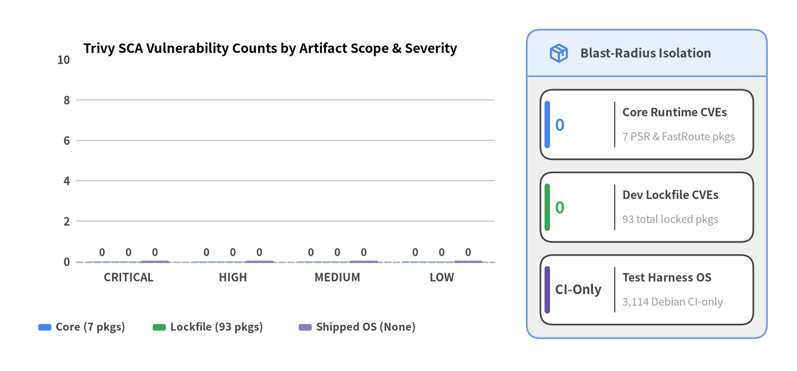
Source Code
from drawlib.canvas import save, setup
from drawlib.charts.bar import BarChart
from drawlib.icons import phosphor
from drawlib.smartarts import KpiCards, Panel
from drawlib.styles import Styles
setup(width=146, height=68, dpi=150)
# Left: Grouped BarChart comparing Application CVEs vs Non-Shipped Harness OS
chart = BarChart(
axis_line_style=Styles.MutedDashed,
categories=["CRITICAL", "HIGH", "MEDIUM", "LOW"],
width=88.0,
height=46.5,
title="Trivy SCA Vulnerability Counts by Artifact Scope & Severity",
title_style=Styles.BlackBold.patch(text_size=11.8),
orientation="vertical",
bar_mode="group",
bar_width_ratio=0.76,
bar_r=0.8,
axis_text_style=Styles.DarkBold.patch(text_size=10.0),
grid_style=Styles.MutedThin,
value_text_style=Styles.DarkBold.patch(text_size=9.5),
value_format="{:.0f}",
)
chart.add_series("Core (7 pkgs)", [0, 0, 0, 0], style=Styles.PrimaryFlat)
chart.add_series("Lockfile (93 pkgs)", [0, 0, 0, 0], style=Styles.SuccessFlat)
chart.add_series("Shipped OS (None)", [0, 0, 0, 0], style=Styles.SecondaryNeutral)
chart.configure_y_axis(min_value=0.0, max_value=10.0, tick_step=2.0, label="Application & Shipped OS CVEs")
chart.draw(xy=(5.5, 15.0))
chart.draw_legend(
xy=(7.0, 8.0),
text_style=Styles.DarkBold.patch(text_size=9.6),
orientation="horizontal",
item_gap=2.8,
)
# Right: Boundary Isolation Summary Panel
panel = Panel(
"Blast-Radius Isolation",
style=Styles.Neutral,
header_style=Styles.PrimaryNeutral,
text_style=Styles.DarkBold.patch(text_size=11.0),
icon=phosphor.package,
icon_style=Styles.PrimaryBold,
header_variant="filled",
header_height=8.5,
)
panel.draw((96.5, 6.0), width=44.0, height=56.5)
r_xy, r_w, r_h = panel.get_content_box(
(96.5, 6.0), width=44.0, height=56.5, padding=(2.5, 2.5)
)
kpis = KpiCards(
style=Styles.White,
metric_style=Styles.PrimaryBold.patch(text_size=15.0),
text_style=Styles.DarkBold.patch(text_size=10.2),
description_style=Styles.Muted.patch(text_size=9.5),
accent_style=Styles.PrimaryFlat,
accent_position="left_pill",
metric_layout="left_column",
metric_width_ratio=0.35,
spacing=2.4,
)
kpis.add("0", "Core Runtime CVEs", "7 PSR & FastRoute pkgs")
kpis.add(
"0",
"Dev Lockfile CVEs",
"93 total locked pkgs",
accent_style=Styles.SuccessFlat,
metric_style=Styles.SuccessBold.patch(text_size=15.0),
)
kpis.add(
"CI-Only",
"Test Harness OS",
"3,114 Debian CI-only",
accent_style=Styles.SecondaryFlat,
metric_style=Styles.DarkBold.patch(text_size=11.5),
)
kpis.draw(xy=r_xy, width=r_w, height=r_h, columns=1)
save()
6.1 Composer Supply-Chain Hygiene & Governance Baseline
Slim's composer.json and composer.lock architecture minimizes downstream supply-chain exposure by keeping the composer require slim/slim dependency tree limited strictly to 6 PHP-FIG PSR interface packages plus nikic/fast-route ^1.3, while isolating all 6 PSR-7 concrete test providers (slim/psr7, nyholm/psr7, guzzlehttp/psr7, laminas/laminas-diactoros, httpsoft/http-message, slim/http) and static analyzers under require-dev.
| Supply-Chain & Security Gate | Measured Value | Verdict | Architectural & Compliance Evidence |
|---|---|---|---|
Deterministic Lockfile (has_lockfile) |
True (composer.lock) |
PASS |
Locks exact commit SHA and version metadata across all 93 runtime and dev packages. |
Core Runtime Dependencies (dependencies_count) |
7 packages |
PASS |
6 official psr/* contract packages + nikic/fast-route: ^1.3. |
Unpinned Specifiers (unpinned_dependencies_count) |
0 |
PASS |
Every dependency uses explicit SemVer caret (^) or dual-major union (^1.0 || ^2.0) constraints. |
Security Disclosure Policy (has_security_policy) |
True (SECURITY.md) |
PASS |
Documents responsible vulnerability reporting via GitHub Security Advisories / Tidelift. |
| Committed / Hardcoded Secrets | 0 files / 0 literals |
PASS |
Clean across both Trivy secret scanning (secrets=[]) and PHP AST literal inspection. |
| Container IaC Misconfigurations | 0 |
PASS |
misconfigurations=[] on .pni/dockerfiles/Dockerfile (with batch waiver DS-0026). |
AST Dangerous Sinks (ast_dangerous_sinks_count) |
0 |
PASS |
Zero eval, exec, shell_exec, system, passthru, unserialize, or SQLi/XSS sinks. |
Standalone HTTP Endpoints (api_endpoints_count) |
0 |
PASS |
Reusable library archetype; binds zero network sockets unless instantiated by consumer app. |
Separation of Harness OS Packages vs. Library Dependencies
Trivy (ghcr.io/aquasecurity/trivy:0.69.3) scanned both the repository filesystem (composer.lock) and the resolved container image built from .pni/dockerfiles/Dockerfile (php:8.2-cli-bookworm):
| Vulnerability Boundary | CRITICAL | HIGH | MEDIUM | LOW | Total | Scoring & Consumer Impact |
|---|---|---|---|---|---|---|
1. Core Runtime Dependencies (7 Composer pkgs) |
0 |
0 |
0 |
0 |
0 |
Zero Impact: psr/* and nikic/fast-route have 0 known advisories. |
2. Dev / Test Lockfile (86 Composer pkgs) |
0 |
0 |
0 |
0 |
0 |
Zero Impact: All 93 locked Composer packages in composer.lock are 100% CVE-free. |
3. Shipped Project Container OS (os_vuln_counts) |
0 |
0 |
0 |
0 |
0 |
Zero Impact: Slim is a pure PHP library (has_dockerfile=false) and ships no container image. |
4. Ephemeral Test Harness OS (harness_os_vuln_counts) |
6 |
265 |
1,698 |
1,128 |
3,114 |
Non-Shipped Harness Only: Debian Bookworm system packages (perl, openssl, curl, linux-libc-dev) inside .pni/dockerfiles/Dockerfile used solely for offline phpunit execution; properly isolated from library scoring. |
6.2 SAST Security Verification & Built-In PSR-7 / Error / BodyParsing Defenses
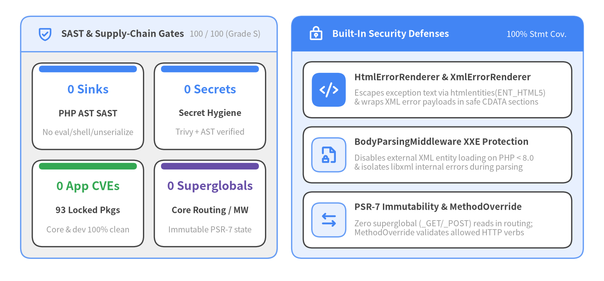
Source Code
from drawlib.canvas import save, setup
from drawlib.icons import phosphor
from drawlib.smartarts import CardList, KpiCards, Panel
from drawlib.styles import Styles
setup(width=146, height=68, dpi=150)
# Left Panel: SAST & Supply-Chain Security KPIs
left_panel = Panel(
"SAST & Supply-Chain Gates",
"100 / 100 (Grade S)",
style=Styles.Neutral,
header_style=Styles.PrimaryNeutral,
text_style=Styles.DarkBold.patch(text_size=11.0),
description_style=Styles.Muted.patch(text_size=9.8),
icon=phosphor.shield_check,
icon_style=Styles.PrimaryBold,
header_variant="filled",
header_height=8.5,
)
left_panel.draw((5.0, 5.5), width=62.0, height=58.5)
l_xy, l_w, l_h = left_panel.get_content_box(
(5.0, 5.5), width=62.0, height=58.5, padding=(2.8, 2.8)
)
sast_kpis = KpiCards(
style=Styles.White,
metric_style=Styles.PrimaryBold.patch(text_size=14.0),
text_style=Styles.DarkBold.patch(text_size=10.2),
description_style=Styles.Muted.patch(text_size=9.5),
accent_style=Styles.PrimaryFlat,
accent_position="top_bar",
metric_layout="top_stack",
spacing=2.6,
)
sast_kpis.add("0 Sinks", "PHP AST SAST", "No eval/shell/unserialize")
sast_kpis.add("0 Secrets", "Secret Hygiene", "Trivy + AST verified")
sast_kpis.add(
"0 App CVEs",
"93 Locked Pkgs",
"Core & dev 100% clean",
accent_style=Styles.SuccessFlat,
metric_style=Styles.SuccessBold.patch(text_size=14.0),
)
sast_kpis.add(
"0 Superglobals",
"Core Routing / MW",
"Immutable PSR-7 state",
accent_style=Styles.SecondaryFlat,
metric_style=Styles.SecondaryBold.patch(text_size=14.0),
)
sast_kpis.draw(xy=l_xy, width=l_w, height=l_h, columns=2)
# Right Panel: Built-In Defensive Subsystems CardList
right_panel = Panel(
"Built-In Security Defenses",
"100% Stmt Cov.",
style=Styles.PrimaryNeutral,
header_style=Styles.PrimaryFlat,
text_style=Styles.WhiteBold.patch(text_size=11.0),
description_style=Styles.White.patch(text_size=9.8),
icon=phosphor.lock_key,
icon_style=Styles.WhiteBold,
header_variant="filled",
header_height=8.5,
)
right_panel.draw((70.5, 5.5), width=70.5, height=58.5)
r_xy, r_w, r_h = right_panel.get_content_box(
(70.5, 5.5), width=70.5, height=58.5, padding=(2.8, 2.5)
)
sec_cards = CardList(
style=Styles.White,
text_style=Styles.DarkBold.patch(text_size=10.5),
description_style=Styles.Muted.patch(text_size=9.5),
badge_shape="rounded_rect",
badge_style=Styles.PrimaryNeutral,
icon_style=Styles.PrimaryBold,
direction="vertical",
spacing=2.2,
)
sec_cards.add(
"HtmlErrorRenderer & XmlErrorRenderer",
"Escapes exception text via htmlentities(ENT_HTML5)\n& wraps XML error payloads in safe CDATA sections",
icon=phosphor.code,
badge_style=Styles.PrimaryFlat,
icon_style=Styles.WhiteBold,
)
sec_cards.add(
"BodyParsingMiddleware XXE Protection",
"Disables external XML entity loading on PHP < 8.0\n& isolates libxml internal errors during parsing",
icon=phosphor.file_lock,
)
sec_cards.add(
"PSR-7 Immutability & MethodOverride",
"Zero superglobal (_GET/_POST) reads in routing;\nMethodOverride validates allowed HTTP verbs",
icon=phosphor.arrows_left_right,
)
sec_cards.draw(xy=r_xy, width=r_w, height=r_h)
save()
Architectural Security Analysis of Core Subsystems
- Context-Appropriate Output Encoding in
Error/Renderers/*(XSS/InjectionPrevention):Slim\Error\Renderers\HtmlErrorRenderer(Slim/Error/Renderers/HtmlErrorRenderer.php,100.0%PCOV coverage) escapes every exception class name, message, file path, and stack trace viahtmlentities(..., ENT_COMPAT | ENT_HTML5, 'utf-8')before interpolating into HTML error templates, and gates stack trace disclosure behind the explicit$displayErrorDetailsboolean flag (defaultfalse).Slim\Error\Renderers\XmlErrorRendererwraps exception messages inside<![CDATA[ ... ]]>blocks while escaping embedded]]>sequences, andJsonErrorRendererserializes structured arrays viajson_encode(..., JSON_PRETTY_PRINT | JSON_UNESCAPED_SLASHES).
- XML External Entity (
XXE) Hardening inBodyParsingMiddleware:Slim\Middleware\BodyParsingMiddleware(Slim/Middleware/BodyParsingMiddleware.php,100.0%PCOV coverage) guards XML request body parsing (application/xml,text/xml) by callinglibxml_disable_entity_loader(true)on PHP< 8.0(where external entity loading is not disabled by default) andlibxml_use_internal_errors(true)withlibxml_clear_errors()before and aftersimplexml_load_string($input), preventing XXE file disclosure and warning leakage.
- Immutable PSR-7 Request State & Superglobal Isolation:
- Core routing and middleware classes never read
$_GET,$_POST,$_SERVER, or$_COOKIEdirectly. Superglobals are read exclusively once insideServerRequestCreatorFactorywhen synthesizing the initial PSR-7ServerRequestInterface. RoutingMiddlewareattaches matchedRouteContextstate (__route__,__routeParser__,__routingResults__,__basePath__) via immutable$request->withAttribute(...)clones, andResponseEmitter::emitHeaders()preserves multipleSet-Cookieheaders without overwriting prior cookie directives.
- Core routing and middleware classes never read